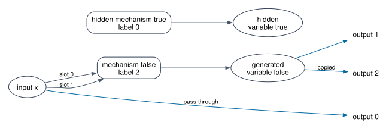
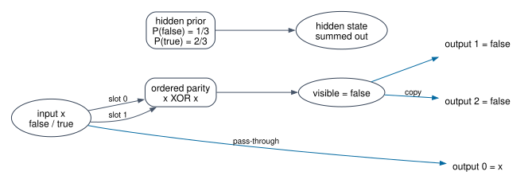

2026-09-08
import Mathlib.Data.Fintype.Sum
import Mathlib.Data.Finset.Lattice.Fold
import Mathlib.Tactic.Common
import Mathlib.Logic.RelationA signature assigns each mechanism label an ordered list of input types and one output type. Types can encode variable names, ordered state tables and references; labels can encode mechanism names and references. No uniqueness of these attributes is imposed. Parent lists, not sets, retain repeated input occurrences.
An interface is a finite typed set. A network’s variables are its input ports plus its internal generators. Thus its input leg is injective and identifies exactly the exogenous variables; every other variable has exactly one generator. The output leg is an arbitrary typed function, allowing copying and pass-through. A finite ranking witnesses acyclicity but is a proposition, not syntax data. Neither reachability from outputs nor nonempty interfaces are required.
namespace OpenNet
structure Signature where
Ty : Type
Label : Type
inputs : Label → List Ty
result : Label → Ty
structure Interface (S : Signature) where
Port : Type
finite : Fintype Port
type : Port → S.Ty
attribute [instance] Interface.finite
variable {S : Signature}
def Interface.sum (X Y : Interface S) : Interface S :=
⟨X.Port ⊕ Y.Port, inferInstance, Sum.elim X.type Y.type⟩
def Interface.empty (S : Signature) : Interface S :=
⟨Empty, inferInstance, Empty.elim⟩
structure Net (X Y : Interface S) where
Gen : Type
finite : Fintype Gen
label : Gen → S.Label
parents : Gen → List (X.Port ⊕ Gen)
output : Y.Port → X.Port ⊕ Gen
parents_typed : ∀ g, (parents g).map (Sum.elim X.type (S.result ∘ label)) =
S.inputs (label g)
output_typed : ∀ y, Sum.elim X.type (S.result ∘ label) (output y) = Y.type y
acyclic : ∃ rank : Gen → ℕ, ∀ g h, Sum.inr h ∈ parents g → rank h < rank g
attribute [instance] Net.finite
namespace Net
variable {X Y Z W : Interface S}
abbrev Var (f : Net X Y) := X.Port ⊕ f.Gen
def varType (f : Net X Y) : f.Var → S.Ty :=
Sum.elim X.type (S.result ∘ f.label)
/-- No nonempty directed path can return to its starting generator. -/
theorem no_directed_cycle (f : Net X Y) (a : f.Gen) :
¬ Relation.TransGen (fun u v => Sum.inr u ∈ f.parents v) a a := by
obtain ⟨r, hr⟩ := f.acyclic
have increasing {u v : f.Gen}
(p : Relation.TransGen (fun u v => Sum.inr u ∈ f.parents v) u v) : r u < r v := by
induction p with
| single h => exact hr _ _ h
| tail _ h ih => exact lt_trans ih (hr _ _ h)
intro p
exact Nat.lt_irrefl _ (increasing p)
/-- Renumbering fixes the boundary and preserves every ordered incidence and label. -/
structure Iso (f g : Net X Y) where
gen : f.Gen ≃ g.Gen
label : ∀ a, g.label (gen a) = f.label a
parents : ∀ a, g.parents (gen a) = (f.parents a).map (Sum.map id gen)
output : ∀ y, g.output y = Sum.map id gen (f.output y)
def Iso.refl (f : Net X Y) : Iso f f where
gen := Equiv.refl _
label _ := rfl
parents _ := by simp
output y := by cases f.output y <;> rfl
def Iso.trans {f g h : Net X Y} (a : Iso f g) (b : Iso g h) : Iso f h where
gen := a.gen.trans b.gen
label x := (b.label _).trans (a.label _)
parents x := by
change h.parents (b.gen (a.gen x)) = _
rw [b.parents, a.parents, List.map_map]
congr 1
funext v
cases v <;> rfl
output y := by
rw [b.output, a.output]
cases f.output y <;> rfl
def Iso.symm {f g : Net X Y} (a : Iso f g) : Iso g f where
gen := a.gen.symm
label x := by simpa using (a.label (a.gen.symm x)).symm
parents x := by
have h := congrArg (List.map (Sum.map id a.gen.symm)) (a.parents (a.gen.symm x))
simp only [Equiv.apply_symm_apply, List.map_map] at h
simpa using h.symm
output y := by
have h := congrArg (Sum.map id a.gen.symm) (a.output y)
cases e : f.output y <;> simpa [e] using h.symm
instance setoid (X Y : Interface S) : Setoid (Net X Y) where
r f g := Nonempty (Iso f g)
iseqv := ⟨fun f => ⟨Iso.refl f⟩,
fun ⟨a⟩ => ⟨a.symm⟩, fun ⟨a⟩ ⟨b⟩ => ⟨a.trans b⟩⟩
/-- Pure boundary wiring contains no mechanisms. -/
def wire (f : Y.Port → X.Port) (typed : ∀ y, X.type (f y) = Y.type y) :
Net X Y where
Gen := Empty
finite := inferInstance
label := Empty.elim
parents := Empty.elim
output := Sum.inl ∘ f
parents_typed := fun g => g.elim
output_typed := typed
acyclic := ⟨Empty.elim, fun g => g.elim⟩
def identity (X : Interface S) : Net X X := wire id (fun _ => rfl)
/-- The left variable inclusion into sequential gluing. -/
def left (f : Net X Y) (g : Net Y Z) : f.Var → X.Port ⊕ (f.Gen ⊕ g.Gen) :=
Sum.map id Sum.inl
/-- Substitute the actual, possibly repeated or passed-through, output map. -/
def right (f : Net X Y) (g : Net Y Z) : g.Var → X.Port ⊕ (f.Gen ⊕ g.Gen) :=
Sum.elim (fun y => left f g (f.output y)) (fun b => Sum.inr (Sum.inr b))
theorem left_typed (f : Net X Y) (g : Net Y Z) (v : f.Var) :
Sum.elim X.type (S.result ∘ Sum.elim f.label g.label) (left f g v) =
f.varType v := by cases v <;> rfl
theorem right_typed (f : Net X Y) (g : Net Y Z) (v : g.Var) :
Sum.elim X.type (S.result ∘ Sum.elim f.label g.label) (right f g v) =
g.varType v := by
cases v with
| inl y => exact (left_typed f g _).trans (f.output_typed y)
| inr b => rfl
/-- Gluing is acyclic: all first-component ranks precede second-component ranks. -/
theorem compose_acyclic (f : Net X Y) (g : Net Y Z) :
∃ rank : f.Gen ⊕ g.Gen → ℕ, ∀ a b,
Sum.inr b ∈ Sum.elim
(fun a => (f.parents a).map (left f g))
(fun b => (g.parents b).map (right f g)) a → rank b < rank a := by
classical
obtain ⟨rf, hf⟩ := f.acyclic
obtain ⟨rg, hg⟩ := g.acyclic
let bound := Finset.univ.sup rf + 1
have hb (a : f.Gen) : rf a < bound :=
Nat.lt_succ_of_le (Finset.le_sup (f := rf) (Finset.mem_univ a))
refine ⟨Sum.elim rf (fun b => bound + rg b), ?_⟩
intro a b h
cases a with
| inl a =>
obtain ⟨v, hv, he⟩ := List.mem_map.mp h
cases v with
| inl x => simp [left] at he
| inr c =>
simp only [left, Sum.map_inr, Sum.inr.injEq] at he
subst b
exact hf a c hv
| inr a =>
obtain ⟨v, hv, he⟩ := List.mem_map.mp h
cases v with
| inl y =>
cases e : f.output y with
| inl x => simp [right, left, e] at he
| inr c =>
simp only [right, Sum.elim_inl, e, left, Sum.map_inr, Sum.inr.injEq] at he
subst b
exact lt_of_lt_of_le (hb c) (Nat.le_add_right _ _)
| inr c =>
simp only [right, Sum.elim_inr, Sum.inr.injEq] at he
subst b
exact Nat.add_lt_add_left (hg a c hv) bound
/-- Total sequential composition, with a disjoint sum of generators. -/
def comp (f : Net X Y) (g : Net Y Z) : Net X Z where
Gen := f.Gen ⊕ g.Gen
finite := inferInstance
label := Sum.elim f.label g.label
parents := Sum.elim
(fun a => (f.parents a).map (left f g))
(fun b => (g.parents b).map (right f g))
output := right f g ∘ g.output
parents_typed := by
intro a
cases a with
| inl a =>
change ((f.parents a).map (left f g)).map _ = _
rw [List.map_map]
exact (congrArg (fun k => (f.parents a).map k) (funext (left_typed f g))).trans
(f.parents_typed a)
| inr b =>
change ((g.parents b).map (right f g)).map _ = _
rw [List.map_map]
exact (congrArg (fun k => (g.parents b).map k) (funext (right_typed f g))).trans
(g.parents_typed b)
output_typed y := (right_typed f g _).trans (g.output_typed y)
acyclic := compose_acyclic f g
end Net
end OpenNetimport CategoricalBayesianNetworksProofs.Syntax
import Mathlib.CategoryTheory.Category.BasicThe only quotient relation is existence of a bijection on generators preserving labels, ordered parent lists and the explicit output leg. The category laws are proved by the empty-sum and sum-associativity bijections; no category equations are included in that relation.
namespace OpenNet
variable {S : Signature} {X Y Z W : Interface S}
namespace Net
def Iso.comp {f f' : Net X Y} {g g' : Net Y Z}
(a : Iso f f') (b : Iso g g') : Iso (f.comp g) (f'.comp g') where
gen := Equiv.sumCongr a.gen b.gen
label x := by
cases x with
| inl x => exact a.label x
| inr x => exact b.label x
parents x := by
cases x with
| inl x =>
change (f'.parents (a.gen x)).map _ = ((f.parents x).map _).map _
rw [a.parents, List.map_map, List.map_map]
congr 1
funext v
cases v <;> rfl
| inr x =>
change (g'.parents (b.gen x)).map _ = ((g.parents x).map _).map _
rw [b.parents, List.map_map, List.map_map]
congr 1
funext v
cases v with
| inl y =>
simp only [Function.comp_apply, Sum.map_inl, id_eq, right, Sum.elim_inl, a.output]
cases f.output y <;> rfl
| inr y => rfl
output y := by
simp only [Net.comp, Function.comp_apply, b.output]
cases g.output y with
| inl y =>
simp only [Sum.map_inl, id_eq, right, Sum.elim_inl, a.output]
cases f.output y <;> rfl
| inr b => rfl
def id_comp_iso (f : Net X Y) : Iso ((identity X).comp f) f where
gen := Equiv.emptySum Empty f.Gen
label x := by rcases x with x | x; exact x.elim; rfl
parents x := by
rcases x with x | x
· exact x.elim
· change f.parents x = ((f.parents x).map (right (identity X) f)).map _
rw [List.map_map]
have h : (Sum.map id (Equiv.emptySum Empty f.Gen)) ∘ right (identity X) f = id := by
funext v
cases v <;> rfl
exact ((congrArg (fun k => (f.parents x).map k) h).trans (List.map_id _)).symm
output y := by
change f.output y = Sum.map _ _ (right (identity X) f (f.output y))
cases f.output y <;> rfl
def comp_id_iso (f : Net X Y) : Iso (f.comp (identity Y)) f where
gen := Equiv.sumEmpty f.Gen Empty
label x := by rcases x with x | x; rfl; exact x.elim
parents x := by
rcases x with x | x
· change f.parents x = ((f.parents x).map (left f (identity Y))).map _
rw [List.map_map]
have h : (Sum.map id (Equiv.sumEmpty f.Gen Empty)) ∘ left f (identity Y) = id := by
funext v
cases v <;> rfl
exact ((congrArg (fun k => (f.parents x).map k) h).trans (List.map_id _)).symm
· exact x.elim
output y := by change _ = Sum.map _ _ (left f _ (f.output y)); cases f.output y <;> rfl
def assoc_iso (f : Net X Y) (g : Net Y Z) (h : Net Z W) :
Iso ((f.comp g).comp h) (f.comp (g.comp h)) where
gen := Equiv.sumAssoc f.Gen g.Gen h.Gen
label a := by rcases a with (a | a) | a <;> rfl
parents a := by
rcases a with (a | a) | a
· change (f.parents a).map _ = (((f.parents a).map _).map _).map _
simp only [List.map_map]
congr 1; funext v; cases v <;> rfl
· change ((g.parents a).map _).map _ = (((g.parents a).map _).map _).map _
simp only [List.map_map]
congr 1; funext v
cases v with
| inl y =>
change right f (g.comp h) (Sum.inl y) = _
cases e : f.output y <;> simp [right, left, e, Function.comp_def] <;> rfl
| inr b => rfl
· change ((h.parents a).map _).map _ = ((h.parents a).map _).map _
simp only [List.map_map]
congr 1; funext v
cases v with
| inl z =>
cases eg : g.output z with
| inl y =>
cases ef : f.output y <;> (simp [comp, right, left, eg, ef, Function.comp_def]; try rfl)
| inr b => simp [comp, right, left, eg, Function.comp_def]; rfl
| inr c => rfl
output w := by
cases eh : h.output w with
| inl z =>
cases eg : g.output z with
| inl y => cases ef : f.output y <;> (simp [comp, right, left, eh, eg, ef]; try rfl)
| inr b => simp [comp, right, left, eh, eg]; rfl
| inr c => simp [comp, right, left, eh]; rfl
end Net
abbrev Hom (X Y : Interface S) := Quotient (Net.setoid X Y)
def ofNet (f : Net X Y) : Hom X Y := Quotient.mk _ f
theorem ofNet_eq_iff (f g : Net X Y) :
ofNet f = ofNet g ↔ Nonempty (Net.Iso f g) := Quotient.eq
def compose (f : Hom X Y) (g : Hom Y Z) : Hom X Z :=
Quotient.liftOn₂ f g (fun a b => ofNet (a.comp b))
(fun _ _ _ _ ⟨a⟩ ⟨b⟩ => Quotient.sound ⟨a.comp b⟩)
@[simp] theorem compose_ofNet (f : Net X Y) (g : Net Y Z) :
compose (ofNet f) (ofNet g) = ofNet (f.comp g) := rfl
instance category : CategoryTheory.Category (Interface S) where
Hom := Hom
id X := ofNet (Net.identity X)
comp := compose
id_comp := by
intro X Y f
induction f using Quotient.inductionOn with | _ f =>
exact Quotient.sound ⟨Net.id_comp_iso f⟩
comp_id := by
intro X Y f
induction f using Quotient.inductionOn with | _ f =>
exact Quotient.sound ⟨Net.comp_id_iso f⟩
assoc := by
intro X Y Z W f g h
induction f, g using Quotient.inductionOn₂ with | _ f g =>
induction h using Quotient.inductionOn with | _ h =>
exact Quotient.sound ⟨Net.assoc_iso f g h⟩
end OpenNetimport CategoricalBayesianNetworksProofs.CategoryThe tensor keeps both sets of generators, including hidden components. Its two variable maps are injective and disjoint. The interchange isomorphism merely reorders the four summands of generators.
namespace OpenNet
variable {S : Signature} {X Y Z W X' Y' Z' : Interface S}
namespace Net
def tinl (f : Net X Y) (g : Net X' Y') : f.Var → (X.sum X').Port ⊕ (f.Gen ⊕ g.Gen) :=
Sum.map Sum.inl Sum.inl
def tinr (f : Net X Y) (g : Net X' Y') : g.Var → (X.sum X').Port ⊕ (f.Gen ⊕ g.Gen) :=
Sum.map Sum.inr Sum.inr
theorem tinl_typed (f : Net X Y) (g : Net X' Y') (v : f.Var) :
Sum.elim (X.sum X').type (S.result ∘ Sum.elim f.label g.label) (tinl f g v) =
f.varType v := by cases v <;> rfl
theorem tinr_typed (f : Net X Y) (g : Net X' Y') (v : g.Var) :
Sum.elim (X.sum X').type (S.result ∘ Sum.elim f.label g.label) (tinr f g v) =
g.varType v := by cases v <;> rfl
theorem tensor_acyclic (f : Net X Y) (g : Net X' Y') :
∃ rank : f.Gen ⊕ g.Gen → ℕ, ∀ a b,
Sum.inr b ∈ Sum.elim
(fun a => (f.parents a).map (tinl f g))
(fun b => (g.parents b).map (tinr f g)) a → rank b < rank a := by
obtain ⟨rf, hf⟩ := f.acyclic
obtain ⟨rg, hg⟩ := g.acyclic
refine ⟨Sum.elim rf rg, ?_⟩
intro a b h
cases a with
| inl a =>
obtain ⟨v, hv, he⟩ := List.mem_map.mp h
cases v with
| inl x => simp [tinl] at he
| inr c =>
simp only [tinl, Sum.map_inr, Sum.inr.injEq] at he
subst b
exact hf a c hv
| inr a =>
obtain ⟨v, hv, he⟩ := List.mem_map.mp h
cases v with
| inl x => simp [tinr] at he
| inr c =>
simp only [tinr, Sum.map_inr, Sum.inr.injEq] at he
subst b
exact hg a c hv
def tensor (f : Net X Y) (g : Net X' Y') : Net (X.sum X') (Y.sum Y') where
Gen := f.Gen ⊕ g.Gen
finite := inferInstance
label := Sum.elim f.label g.label
parents := Sum.elim
(fun a => (f.parents a).map (tinl f g))
(fun b => (g.parents b).map (tinr f g))
output := Sum.elim (tinl f g ∘ f.output) (tinr f g ∘ g.output)
parents_typed := by
intro a
cases a with
| inl a =>
change ((f.parents a).map (tinl f g)).map _ = _
rw [List.map_map]
exact (congrArg (fun k => (f.parents a).map k) (funext (tinl_typed f g))).trans
(f.parents_typed a)
| inr b =>
change ((g.parents b).map (tinr f g)).map _ = _
rw [List.map_map]
exact (congrArg (fun k => (g.parents b).map k) (funext (tinr_typed f g))).trans
(g.parents_typed b)
output_typed := by
intro y
cases y with
| inl y => exact (tinl_typed f g _).trans (f.output_typed y)
| inr y => exact (tinr_typed f g _).trans (g.output_typed y)
acyclic := tensor_acyclic f g
def Iso.tensor {f f' : Net X Y} {g g' : Net X' Y'}
(a : Iso f f') (b : Iso g g') : Iso (f.tensor g) (f'.tensor g') where
gen := Equiv.sumCongr a.gen b.gen
label x := by
cases x with
| inl x => exact a.label x
| inr x => exact b.label x
parents x := by
cases x with
| inl x =>
change (f'.parents (a.gen x)).map _ = ((f.parents x).map _).map _
rw [a.parents, List.map_map, List.map_map]
congr 1; funext v; cases v <;> rfl
| inr x =>
change (g'.parents (b.gen x)).map _ = ((g.parents x).map _).map _
rw [b.parents, List.map_map, List.map_map]
congr 1; funext v; cases v <;> rfl
output y := by
cases y with
| inl y =>
change tinl f' g' (f'.output y) = Sum.map _ _ (tinl f g (f.output y))
rw [a.output]
cases f.output y <;> rfl
| inr y =>
change tinr f' g' (g'.output y) = Sum.map _ _ (tinr f g (g.output y))
rw [b.output]
cases g.output y <;> rfl
def exchange (A B C D : Type) : (A ⊕ B) ⊕ (C ⊕ D) ≃ (A ⊕ C) ⊕ (B ⊕ D) where
toFun := Sum.elim (Sum.elim (Sum.inl ∘ Sum.inl) (Sum.inr ∘ Sum.inl))
(Sum.elim (Sum.inl ∘ Sum.inr) (Sum.inr ∘ Sum.inr))
invFun := Sum.elim (Sum.elim (Sum.inl ∘ Sum.inl) (Sum.inr ∘ Sum.inl))
(Sum.elim (Sum.inl ∘ Sum.inr) (Sum.inr ∘ Sum.inr))
left_inv x := by rcases x with (a | b) | (c | d) <;> rfl
right_inv x := by rcases x with (a | b) | (c | d) <;> rfl
def interchange_iso (f : Net X Y) (g : Net X' Y') (h : Net Y Z) (k : Net Y' Z') :
Iso ((f.tensor g).comp (h.tensor k)) ((f.comp h).tensor (g.comp k)) where
gen := exchange f.Gen g.Gen h.Gen k.Gen
label x := by rcases x with (a | b) | (c | d) <;> rfl
parents x := by
rcases x with (a | b) | (c | d)
· change ((f.parents a).map _).map _ = (((f.parents a).map _).map _).map _
simp only [List.map_map]
congr 1; funext v; cases v <;> rfl
· change ((g.parents b).map _).map _ = (((g.parents b).map _).map _).map _
simp only [List.map_map]
congr 1; funext v; cases v <;> rfl
· change ((h.parents c).map _).map _ = (((h.parents c).map _).map _).map _
simp only [List.map_map]
congr 1; funext v
cases v with
| inl y =>
cases e : f.output y <;>
(simp [comp, tensor, right, left, tinl, Function.comp_def, e]; try rfl)
| inr c => rfl
· change ((k.parents d).map _).map _ = (((k.parents d).map _).map _).map _
simp only [List.map_map]
congr 1; funext v
cases v with
| inl y =>
cases e : g.output y <;>
(simp [comp, tensor, right, left, tinr, Function.comp_def, e]; try rfl)
| inr d => rfl
output z := by
cases z with
| inl z =>
cases e : h.output z with
| inl y => cases ef : f.output y <;> (simp [comp, tensor, right, left, tinl, e, ef]; try rfl)
| inr a => simp [comp, tensor, right, left, tinl, e]; rfl
| inr z =>
cases e : k.output z with
| inl y => cases eg : g.output y <;> (simp [comp, tensor, right, left, tinr, e, eg]; try rfl)
| inr a => simp [comp, tensor, right, left, tinr, e]; rfl
end Net
def tensor (f : Hom X Y) (g : Hom X' Y') : Hom (X.sum X') (Y.sum Y') :=
Quotient.liftOn₂ f g (fun a b => ofNet (a.tensor b))
(fun _ _ _ _ ⟨a⟩ ⟨b⟩ => Quotient.sound ⟨a.tensor b⟩)
@[simp] theorem tensor_ofNet (f : Net X Y) (g : Net X' Y') :
tensor (ofNet f) (ofNet g) = ofNet (f.tensor g) := rfl
theorem tensor_comp (f : Hom X Y) (g : Hom X' Y') (h : Hom Y Z) (k : Hom Y' Z') :
compose (tensor f g) (tensor h k) = tensor (compose f h) (compose g k) := by
induction f, g using Quotient.inductionOn₂ with | _ f g =>
induction h, k using Quotient.inductionOn₂ with | _ h k =>
exact Quotient.sound ⟨Net.interchange_iso f g h k⟩
end OpenNetimport CategoricalBayesianNetworksProofs.Tensor
import Mathlib.CategoryTheory.Monoidal.CategoryPure wiring is contravariant in functions on ports. It can copy, permute or discard ports but never creates a mechanism. The sliding lemma below is an incidence-preserving renumbering theorem. Its premises are equations for labels, individual ordered parent lists and output maps, not assumed category laws.
namespace OpenNet
open CategoryTheory
variable {S : Signature} {X Y Z X' Y' : Interface S}
def wire (p : Y.Port → X.Port) (hp : ∀ y, X.type (p y) = Y.type y) : X ⟶ Y :=
ofNet (Net.wire p hp)
theorem wire_congr {p q : Y.Port → X.Port} {hp hq} (h : p = q) :
wire p hp = wire q hq := by subst q; rfl
@[simp] theorem wire_id (X : Interface S) : wire (id : X.Port → X.Port) (fun _ => rfl) =
𝟙 X := rfl
@[simp] theorem wire_comp (p : Y.Port → X.Port) (q : Z.Port → Y.Port) (hp hq) :
wire p hp ≫ wire q hq = wire (p ∘ q) (fun z => (hp (q z)).trans (hq z)) := by
apply Quotient.sound
refine ⟨⟨Equiv.emptySum Empty Empty, ?_, ?_, ?_⟩⟩
· rintro (a | a) <;> exact a.elim
· rintro (a | a) <;> exact a.elim
· intro z; rfl
@[simp] theorem wire_tensor (p : Y.Port → X.Port) (q : Y'.Port → X'.Port) (hp hq) :
tensor (wire p hp) (wire q hq) =
wire (Sum.map p q) (fun y => by cases y with
| inl y => exact hp y
| inr y => exact hq y) := by
apply Quotient.sound
refine ⟨⟨Equiv.emptySum Empty Empty, ?_, ?_, ?_⟩⟩
· rintro (a | a) <;> exact a.elim
· rintro (a | a) <;> exact a.elim
· rintro (y | y) <;> rfl
def portIso (e : X.Port ≃ Y.Port) (he : ∀ x, Y.type (e x) = X.type x) : X ≅ Y where
hom := wire e.symm (fun y => by simpa using (he (e.symm y)).symm)
inv := wire e he
hom_inv_id := by
rw [wire_comp, ← wire_id]
apply wire_congr; funext x; exact e.symm_apply_apply x
inv_hom_id := by
rw [wire_comp, ← wire_id]
apply wire_congr; funext y; exact e.apply_symm_apply y
namespace Net
def slide (f : Net X Y) (g : Net X' Y')
(i : X'.Port → X.Port) (o : Y'.Port → Y.Port) (hi ho)
(e : f.Gen ≃ g.Gen)
(hl : ∀ a, g.label (e a) = f.label a)
(hp : ∀ a, (g.parents (e a)).map (Sum.map i id) =
(f.parents a).map (Sum.map id e))
(hout : ∀ y, Sum.map i id (g.output y) = Sum.map id e (f.output (o y))) :
Iso (f.comp (Net.wire o ho)) ((Net.wire i hi).comp g) where
gen := ((Equiv.sumEmpty f.Gen Empty).trans e).trans (Equiv.emptySum Empty g.Gen).symm
label a := by
rcases a with a | a
· exact hl a
· exact a.elim
parents a := by
rcases a with a | a
· change (g.parents (e a)).map _ = (((f.parents a).map _).map _)
have h := congrArg (List.map (Sum.map id (Sum.inr : g.Gen → Empty ⊕ g.Gen))) (hp a)
simp only [List.map_map] at h ⊢
have L : right (Net.wire i hi) g =
(Sum.map id (Sum.inr : g.Gen → Empty ⊕ g.Gen)) ∘ Sum.map i id := by
funext v; cases v <;> rfl
have R : (Sum.map id
(((Equiv.sumEmpty f.Gen Empty).trans e).trans (Equiv.emptySum Empty g.Gen).symm)) ∘
left f (Net.wire o ho) =
(Sum.map id (Sum.inr : g.Gen → Empty ⊕ g.Gen)) ∘ Sum.map id e := by
funext v; cases v <;> rfl
exact (congrArg (fun k => (g.parents (e a)).map k) L).trans
(h.trans (congrArg (fun k => (f.parents a).map k) R).symm)
· exact a.elim
output y := by
have h := congrArg (Sum.map id (Sum.inr : g.Gen → Empty ⊕ g.Gen)) (hout y)
change right (Net.wire i hi) g (g.output y) = Sum.map _ _ (left f _ (f.output (o y)))
have L (v : g.Var) : right (Net.wire i hi) g v =
Sum.map id (Sum.inr : g.Gen → Empty ⊕ g.Gen) (Sum.map i id v) := by
cases v <;> rfl
have R (v : f.Var) : Sum.map id
(((Equiv.sumEmpty f.Gen Empty).trans e).trans (Equiv.emptySum Empty g.Gen).symm)
(left f (Net.wire o ho) v) =
Sum.map id (Sum.inr : g.Gen → Empty ⊕ g.Gen) (Sum.map id e v) := by
cases v <;> rfl
exact (L _).trans (h.trans (R _).symm)
end Net
theorem wire_slide (f : Net X Y) (g : Net X' Y')
(i : X'.Port → X.Port) (o : Y'.Port → Y.Port) (hi ho)
(e : f.Gen ≃ g.Gen)
(hl : ∀ a, g.label (e a) = f.label a)
(hp : ∀ a, (g.parents (e a)).map (Sum.map i id) =
(f.parents a).map (Sum.map id e))
(hout : ∀ y, Sum.map i id (g.output y) = Sum.map id e (f.output (o y))) :
ofNet f ≫ wire o ho = wire i hi ≫ ofNet g :=
Quotient.sound ⟨Net.slide f g i o hi ho e hl hp hout⟩
end OpenNetimport CategoricalBayesianNetworksProofs.Wiring
import Mathlib.CategoryTheory.Monoidal.Braided.BasicThe associator, unitors and symmetry are pure bijective wiring on the feet. Naturality for arbitrary networks follows by explicit generator bijections and ordered-incidence equations. Pentagon, triangle, hexagons and involutivity reduce to actual functions on ports, rather than a quotient by coherence equations.
namespace OpenNet
open CategoryTheory
variable {S : Signature}
def assocIso (X Y Z : Interface S) : (X.sum Y).sum Z ≅ X.sum (Y.sum Z) :=
portIso (Equiv.sumAssoc X.Port Y.Port Z.Port)
(fun x => by rcases x with (x | y) | z <;> rfl)
def leftIso (X : Interface S) : (Interface.empty S).sum X ≅ X :=
portIso (Equiv.emptySum Empty X.Port)
(fun x => by rcases x with x | x; exact x.elim; rfl)
def rightIso (X : Interface S) : X.sum (Interface.empty S) ≅ X :=
portIso (Equiv.sumEmpty X.Port Empty)
(fun x => by rcases x with x | x; rfl; exact x.elim)
def swapIso (X Y : Interface S) : X.sum Y ≅ Y.sum X :=
portIso (Equiv.sumComm X.Port Y.Port)
(fun x => by cases x <;> rfl)
theorem assoc_natural {X₁ X₂ X₃ Y₁ Y₂ Y₃ : Interface S}
(f : Hom X₁ Y₁) (g : Hom X₂ Y₂) (h : Hom X₃ Y₃) :
tensor (tensor f g) h ≫ (assocIso Y₁ Y₂ Y₃).hom =
(assocIso X₁ X₂ X₃).hom ≫ tensor f (tensor g h) := by
induction f, g using Quotient.inductionOn₂ with | _ f g =>
induction h using Quotient.inductionOn with | _ h =>
refine wire_slide ((f.tensor g).tensor h) (f.tensor (g.tensor h))
_ _ _ _ (Equiv.sumAssoc f.Gen g.Gen h.Gen) ?_ ?_ ?_
· rintro ((a | b) | c) <;> rfl
· rintro ((a | b) | c)
· change ((f.parents a).map _).map _ = (((f.parents a).map _).map _).map _
simp only [List.map_map]
congr 1; funext v; cases v <;> rfl
· change (((g.parents b).map _).map _).map _ =
(((g.parents b).map _).map _).map _
simp only [List.map_map]
congr 1; funext v; cases v <;> rfl
· change (((h.parents c).map _).map _).map _ = ((h.parents c).map _).map _
simp only [List.map_map]
congr 1; funext v; cases v <;> rfl
· rintro (y | (y | y))
· change Sum.map _ _ (Net.tinl f (g.tensor h) (f.output y)) =
Sum.map _ _ (Net.tinl (f.tensor g) h (Net.tinl f g (f.output y)))
cases f.output y <;> rfl
· change Sum.map _ _ (Net.tinr f (g.tensor h) (Net.tinl g h (g.output y))) =
Sum.map _ _ (Net.tinl (f.tensor g) h (Net.tinr f g (g.output y)))
cases g.output y <;> rfl
· change Sum.map _ _ (Net.tinr f (g.tensor h) (Net.tinr g h (h.output y))) =
Sum.map _ _ (Net.tinr (f.tensor g) h (h.output y))
cases h.output y <;> rfl
theorem left_natural {X Y : Interface S} (f : Hom X Y) :
tensor (𝟙 (Interface.empty S)) f ≫ (leftIso Y).hom =
(leftIso X).hom ≫ f := by
induction f using Quotient.inductionOn with | _ f =>
refine wire_slide ((Net.identity (Interface.empty S)).tensor f) f
_ _ _ _ (Equiv.emptySum Empty f.Gen) ?_ ?_ ?_
· rintro (a | a); exact a.elim; rfl
· rintro (a | a)
· exact a.elim
· change (f.parents a).map _ = ((f.parents a).map _).map _
simp only [List.map_map]
congr 1; funext v; cases v <;> rfl
· intro y
change Sum.map _ _ (f.output y) = Sum.map _ _ (Net.tinr _ _ (f.output y))
cases f.output y <;> rfl
theorem right_natural {X Y : Interface S} (f : Hom X Y) :
tensor f (𝟙 (Interface.empty S)) ≫ (rightIso Y).hom =
(rightIso X).hom ≫ f := by
induction f using Quotient.inductionOn with | _ f =>
refine wire_slide (f.tensor (Net.identity (Interface.empty S))) f
_ _ _ _ (Equiv.sumEmpty f.Gen Empty) ?_ ?_ ?_
· rintro (a | a); rfl; exact a.elim
· rintro (a | a)
· change (f.parents a).map _ = ((f.parents a).map _).map _
simp only [List.map_map]
congr 1; funext v; cases v <;> rfl
· exact a.elim
· intro y
change Sum.map _ _ (f.output y) = Sum.map _ _ (Net.tinl _ _ (f.output y))
cases f.output y <;> rfl
theorem swap_natural {X Y X' Y' : Interface S} (f : Hom X Y) (g : Hom X' Y') :
tensor f g ≫ (swapIso Y Y').hom = (swapIso X X').hom ≫ tensor g f := by
induction f, g using Quotient.inductionOn₂ with | _ f g =>
refine wire_slide (f.tensor g) (g.tensor f)
_ _ _ _ (Equiv.sumComm f.Gen g.Gen) ?_ ?_ ?_
· rintro (a | b) <;> rfl
· rintro (a | b)
· change ((f.parents a).map _).map _ = ((f.parents a).map _).map _
simp only [List.map_map]
congr 1; funext v; cases v <;> rfl
· change ((g.parents b).map _).map _ = ((g.parents b).map _).map _
simp only [List.map_map]
congr 1; funext v; cases v <;> rfl
· rintro (y | y)
· change Sum.map _ _ (Net.tinl _ _ (g.output y)) =
Sum.map _ _ (Net.tinr _ _ (g.output y))
cases g.output y <;> rfl
· change Sum.map _ _ (Net.tinr _ _ (f.output y)) =
Sum.map _ _ (Net.tinl _ _ (f.output y))
cases f.output y <;> rfl
instance monoidalStruct : MonoidalCategoryStruct (Interface S) where
tensorObj := Interface.sum
tensorHom := tensor
whiskerLeft X _ _ f := tensor (𝟙 X) f
whiskerRight f Y := tensor f (𝟙 Y)
tensorUnit := Interface.empty S
associator := assocIso
leftUnitor := leftIso
rightUnitor := rightIso
theorem tensor_id (X Y : Interface S) : tensor (𝟙 X) (𝟙 Y) = 𝟙 (X.sum Y) := by
rw [← wire_id X, ← wire_id Y, wire_tensor, ← wire_id]
apply wire_congr
funext v; cases v <;> rfl
instance monoidal : MonoidalCategory (Interface S) :=
MonoidalCategory.ofTensorHom
tensor_id
(by intros; rfl)
(by intros; rfl)
tensor_comp
assoc_natural
left_natural
right_natural
(by
intro W X Y Z
change tensor (assocIso W X Y).hom (𝟙 Z) ≫
(assocIso W (X.sum Y) Z).hom ≫ tensor (𝟙 W) (assocIso X Y Z).hom =
(assocIso (W.sum X) Y Z).hom ≫ (assocIso W X (Y.sum Z)).hom
simp only [assocIso, portIso, ← wire_id, wire_tensor, wire_comp]
apply wire_congr
funext v
rcases v with w | (x | (y | z)) <;> rfl)
(by
intro X Y
change (assocIso X (Interface.empty S) Y).hom ≫ tensor (𝟙 X) (leftIso Y).hom =
tensor (rightIso X).hom (𝟙 Y)
simp only [assocIso, leftIso, rightIso, portIso, ← wire_id, wire_tensor, wire_comp]
apply wire_congr
funext v
cases v <;> rfl)
instance symmetric : SymmetricCategory (Interface S) where
braiding := swapIso
braiding_naturality_right := by intros X Y Z f; exact swap_natural (𝟙 X) f
braiding_naturality_left := by intros X Y f Z; exact swap_natural f (𝟙 Z)
hexagon_forward := by
intro X Y Z
change (assocIso X Y Z).hom ≫ (swapIso X (Y.sum Z)).hom ≫ (assocIso Y Z X).hom =
tensor (swapIso X Y).hom (𝟙 Z) ≫
(assocIso Y X Z).hom ≫ tensor (𝟙 Y) (swapIso X Z).hom
simp only [assocIso, swapIso, portIso, ← wire_id, wire_tensor, wire_comp]
apply wire_congr
funext v
rcases v with y | (z | x) <;> rfl
hexagon_reverse := by
intro X Y Z
change (assocIso X Y Z).inv ≫ (swapIso (X.sum Y) Z).hom ≫ (assocIso Z X Y).inv =
tensor (𝟙 X) (swapIso Y Z).hom ≫
(assocIso X Z Y).inv ≫ tensor (swapIso X Z).hom (𝟙 Y)
simp only [assocIso, swapIso, portIso, ← wire_id, wire_tensor, wire_comp]
apply wire_congr
funext v
rcases v with (z | x) | y <;> rfl
symmetry := by
intro X Y
change (swapIso X Y).hom ≫ (swapIso Y X).hom = 𝟙 (X.sum Y)
simp only [swapIso, portIso, wire_comp, ← wire_id]
apply wire_congr
funext v
cases v <;> rfl
end OpenNetimport CategoricalBayesianNetworksProofs.Monoidal
import Mathlib.CategoryTheory.CopyDiscardCategory.BasicEach finite typed foot has the canonical commutative comonoid structure: copy is the codiagonal on ports, read contravariantly, and discard has an empty output foot. These structures are coherent with tensor and the empty unit. There is deliberately no Markov-category instance: deleting the output of a mechanism does not erase that hidden mechanism in raw structural syntax.
namespace OpenNet
open CategoryTheory MonoidalCategory
variable {S : Signature}
def copy (X : Interface S) : X ⟶ X.sum X :=
wire (Sum.elim id id) (fun y => by cases y <;> rfl)
def discard (X : Interface S) : X ⟶ Interface.empty S :=
wire Empty.elim (fun y => y.elim)
instance comonoid (X : Interface S) : ComonObj X where
counit := discard X
comul := copy X
counit_comul := by
change copy X ≫ tensor (discard X) (𝟙 X) = (leftIso X).inv
simp only [copy, discard, leftIso, portIso, ← wire_id, wire_tensor, wire_comp]
apply wire_congr
funext v
rcases v with v | v
· exact v.elim
· rfl
comul_counit := by
change copy X ≫ tensor (𝟙 X) (discard X) = (rightIso X).inv
simp only [copy, discard, rightIso, portIso, ← wire_id, wire_tensor, wire_comp]
apply wire_congr
funext v
rcases v with v | v
· rfl
· exact v.elim
comul_assoc := by
change copy X ≫ tensor (𝟙 X) (copy X) =
copy X ≫ tensor (copy X) (𝟙 X) ≫ (assocIso X X X).hom
simp only [copy, assocIso, portIso, ← wire_id, wire_tensor, wire_comp]
apply wire_congr
funext v
rcases v with a | (b | c) <;> rfl
instance commComonoid (X : Interface S) : IsCommComonObj X where
comul_comm := by
change copy X ≫ (swapIso X X).hom = copy X
simp only [copy, swapIso, portIso, wire_comp]
apply wire_congr
funext v; cases v <;> rfl
@[simp] theorem tensorHom_eq {X Y X' Y' : Interface S} (f : X ⟶ Y) (g : X' ⟶ Y') :
f ⊗ₘ g = tensor f g := rfl
@[simp] theorem whiskerLeft_eq (X : Interface S) {Y Z : Interface S} (f : Y ⟶ Z) :
X ◁ f = tensor (𝟙 X) f := rfl
@[simp] theorem whiskerRight_eq {X Y : Interface S} (f : X ⟶ Y) (Z : Interface S) :
f ▷ Z = tensor f (𝟙 Z) := rfl
@[simp] theorem associator_eq (X Y Z : Interface S) : α_ X Y Z = assocIso X Y Z := rfl
@[simp] theorem leftUnitor_eq (X : Interface S) : λ_ X = leftIso X := rfl
@[simp] theorem rightUnitor_eq (X : Interface S) : ρ_ X = rightIso X := rfl
@[simp] theorem braiding_eq (X Y : Interface S) : β_ X Y = swapIso X Y := rfl
instance copyDiscard : CopyDiscardCategory (Interface S) where
copy_tensor := by
intro X Y
change copy (X.sum Y) = tensor (copy X) (copy Y) ≫ tensorμ X X Y Y
simp only [tensorμ, whiskerLeft_eq, whiskerRight_eq, associator_eq, braiding_eq]
simp only [copy, assocIso, swapIso, portIso, ← wire_id, wire_tensor, wire_comp]
apply wire_congr
funext v
rcases v with (x | y) | (x | y) <;> rfl
discard_tensor := by
intro X Y
change discard (X.sum Y) =
tensor (discard X) (discard Y) ≫ (leftIso (Interface.empty S)).hom
simp only [discard, leftIso, portIso, wire_tensor, wire_comp]
apply wire_congr
funext v; exact v.elim
copy_unit := by
change copy (Interface.empty S) = (leftIso (Interface.empty S)).inv
simp only [copy, leftIso, portIso]
apply wire_congr
funext v; rcases v with v | v <;> exact v.elim
discard_unit := by
change discard (Interface.empty S) = 𝟙 (Interface.empty S)
rw [discard, ← wire_id]
apply wire_congr
funext v; exact v.elim
end OpenNetimport CategoricalBayesianNetworksProofs.CopyDiscardThis independent presentation has an arbitrary finite variable set, a finite mechanism set, an injective target function, an injective input leg whose image is precisely the complement of the targets, and an unrestricted output leg. The input/target partition gives a bijection with inputs plus generators. Transport along that bijection gives the canonical syntax without choosing a topological order or deleting hidden components.
The theorems prove both round trips up to incidence-preserving isomorphism and show that isomorphic legged networks yield equal canonical arrows. This is a mathematical representation theorem, not a checked Julia ACSet parser.
namespace OpenNet
variable {S : Signature} {X Y : Interface S}
structure Legged (X Y : Interface S) where
Var : Type
varsFinite : Fintype Var
Gen : Type
gensFinite : Fintype Gen
type : Var → S.Ty
label : Gen → S.Label
target : Gen → Var
target_injective : Function.Injective target
parents : Gen → List Var
input : X.Port → Var
input_injective : Function.Injective input
output : Y.Port → Var
disjoint : ∀ x g, input x ≠ target g
cover : ∀ v, (∃ x, input x = v) ∨ (∃ g, target g = v)
input_typed : ∀ x, type (input x) = X.type x
target_typed : ∀ g, type (target g) = S.result (label g)
parents_typed : ∀ g, (parents g).map type = S.inputs (label g)
output_typed : ∀ y, type (output y) = Y.type y
acyclic : ∃ rank : Var → ℕ, ∀ g v, v ∈ parents g → rank v < rank (target g)
attribute [instance] Legged.varsFinite Legged.gensFinite
namespace Legged
theorem partition_bijective (N : Legged X Y) :
Function.Bijective (Sum.elim N.input N.target) := by
constructor
· intro a b h
cases a with
| inl x =>
cases b with
| inl y => exact congrArg Sum.inl (N.input_injective h)
| inr g => exact (N.disjoint x g h).elim
| inr g =>
cases b with
| inl x => exact (N.disjoint x g h.symm).elim
| inr h' => exact congrArg Sum.inr (N.target_injective h)
· intro v
rcases N.cover v with ⟨x, hx⟩ | ⟨g, hg⟩
· exact ⟨Sum.inl x, hx⟩
· exact ⟨Sum.inr g, hg⟩
noncomputable def varsEquiv (N : Legged X Y) : X.Port ⊕ N.Gen ≃ N.Var :=
Equiv.ofBijective (Sum.elim N.input N.target) N.partition_bijective
@[simp] theorem varsEquiv_input (N : Legged X Y) (x : X.Port) :
N.varsEquiv (Sum.inl x) = N.input x := rfl
@[simp] theorem varsEquiv_target (N : Legged X Y) (g : N.Gen) :
N.varsEquiv (Sum.inr g) = N.target g := rfl
theorem varsEquiv_typed (N : Legged X Y) (v : X.Port ⊕ N.Gen) :
N.type (N.varsEquiv v) = Sum.elim X.type (S.result ∘ N.label) v := by
cases v with
| inl x => exact N.input_typed x
| inr g => exact N.target_typed g
theorem decode_typed (N : Legged X Y) (v : N.Var) :
Sum.elim X.type (S.result ∘ N.label) (N.varsEquiv.symm v) = N.type v := by
rw [← N.varsEquiv_typed, Equiv.apply_symm_apply]
noncomputable def normalise (N : Legged X Y) : Net X Y where
Gen := N.Gen
finite := inferInstance
label := N.label
parents g := (N.parents g).map N.varsEquiv.symm
output := N.varsEquiv.symm ∘ N.output
parents_typed := by
intro g
rw [List.map_map]
exact (congrArg (fun k => (N.parents g).map k) (funext N.decode_typed)).trans
(N.parents_typed g)
output_typed y := (N.decode_typed _).trans (N.output_typed y)
acyclic := by
obtain ⟨r, hr⟩ := N.acyclic
refine ⟨r ∘ N.target, ?_⟩
intro g h hh
obtain ⟨v, hv, he⟩ := List.mem_map.mp hh
have ve : v = N.target h := by
have := congrArg N.varsEquiv he
simpa using this
subst v
exact hr g (N.target h) hv
structure Iso (N M : Legged X Y) where
vars : N.Var ≃ M.Var
gens : N.Gen ≃ M.Gen
type : ∀ v, M.type (vars v) = N.type v
label : ∀ g, M.label (gens g) = N.label g
input : ∀ x, M.input x = vars (N.input x)
target : ∀ g, M.target (gens g) = vars (N.target g)
parents : ∀ g, M.parents (gens g) = (N.parents g).map vars
output : ∀ y, M.output y = vars (N.output y)
def Iso.refl (N : Legged X Y) : Iso N N where
vars := Equiv.refl _
gens := Equiv.refl _
type _ := rfl
label _ := rfl
input _ := rfl
target _ := rfl
parents _ := by simp
output _ := rfl
def Iso.trans {N M K : Legged X Y} (a : Iso N M) (b : Iso M K) : Iso N K where
vars := a.vars.trans b.vars
gens := a.gens.trans b.gens
type v := (b.type _).trans (a.type v)
label g := (b.label _).trans (a.label g)
input x := by rw [b.input, a.input]; rfl
target g := by
change K.target (b.gens (a.gens g)) = _
rw [b.target, a.target]
rfl
parents g := by
change K.parents (b.gens (a.gens g)) = _
rw [b.parents, a.parents, List.map_map]
rfl
output y := by rw [b.output, a.output]; rfl
def Iso.symm {N M : Legged X Y} (a : Iso N M) : Iso M N where
vars := a.vars.symm
gens := a.gens.symm
type v := by simpa using (a.type (a.vars.symm v)).symm
label g := by simpa using (a.label (a.gens.symm g)).symm
input x := by rw [a.input, Equiv.symm_apply_apply]
target g := by
have h := congrArg a.vars.symm (a.target (a.gens.symm g))
simpa using h.symm
parents g := by
have h := congrArg (List.map a.vars.symm) (a.parents (a.gens.symm g))
simpa using h.symm
output y := by rw [a.output, Equiv.symm_apply_apply]
theorem Iso.decode {N M : Legged X Y} (a : Iso N M) (v : N.Var) :
M.varsEquiv.symm (a.vars v) = Sum.map id a.gens (N.varsEquiv.symm v) := by
have step (w : X.Port ⊕ N.Gen) :
M.varsEquiv (Sum.map id a.gens w) = a.vars (N.varsEquiv w) := by
cases w with
| inl x => exact a.input x
| inr g => exact a.target g
apply M.varsEquiv.injective
rw [Equiv.apply_symm_apply, step, Equiv.apply_symm_apply]
noncomputable def Iso.normalise {N M : Legged X Y} (a : Iso N M) :
Net.Iso N.normalise M.normalise where
gen := a.gens
label := a.label
parents g := by
change (M.parents (a.gens g)).map _ = ((N.parents g).map _).map _
rw [a.parents, List.map_map, List.map_map]
exact congrArg (fun k => (N.parents g).map k) (funext a.decode)
output y := by
change M.varsEquiv.symm (M.output y) = _
rw [a.output]
exact a.decode _
theorem normalise_respects_iso {N M : Legged X Y} (a : Iso N M) :
ofNet N.normalise = ofNet M.normalise :=
Quotient.sound ⟨a.normalise⟩
end Legged
namespace Net
def toLegged (f : Net X Y) : Legged X Y where
Var := f.Var
varsFinite := inferInstance
Gen := f.Gen
gensFinite := inferInstance
type := f.varType
label := f.label
target := Sum.inr
target_injective := Sum.inr_injective
parents := f.parents
input := Sum.inl
input_injective := Sum.inl_injective
output := f.output
disjoint := fun _ _ => Sum.inl_ne_inr
cover v := by
cases v with
| inl x => exact Or.inl ⟨x, rfl⟩
| inr g => exact Or.inr ⟨g, rfl⟩
input_typed _ := rfl
target_typed _ := rfl
parents_typed := f.parents_typed
output_typed := f.output_typed
acyclic := by
obtain ⟨r, hr⟩ := f.acyclic
refine ⟨Sum.elim (fun _ => 0) (fun g => r g + 1), ?_⟩
intro g v hv
cases v with
| inl x => exact Nat.zero_lt_succ _
| inr h => exact Nat.add_lt_add_right (hr g h hv) 1
theorem toLegged_decode (f : Net X Y) (v : f.Var) :
f.toLegged.varsEquiv.symm v = v := by
apply f.toLegged.varsEquiv.injective
rw [Equiv.apply_symm_apply]
cases v <;> rfl
noncomputable def normalise_roundtrip (f : Net X Y) : Iso f.toLegged.normalise f where
gen := Equiv.refl _
label _ := rfl
parents g := by
change f.parents g = ((f.parents g).map _).map _
simp only [List.map_map]
have h : Sum.map id (Equiv.refl f.Gen) ∘ f.toLegged.varsEquiv.symm = id := by
funext v
rw [Function.comp_apply, toLegged_decode]
cases v <;> rfl
exact ((congrArg (fun k => (f.parents g).map k) h).trans (List.map_id _)).symm
output y := by
change f.output y = Sum.map id (Equiv.refl f.Gen) (f.toLegged.varsEquiv.symm (f.output y))
rw [toLegged_decode]
cases f.output y <;> rfl
def Iso.toLegged {f g : Net X Y} (a : Iso f g) : Legged.Iso f.toLegged g.toLegged where
vars := Equiv.sumCongr (Equiv.refl X.Port) a.gen
gens := a.gen
type v := by
cases v with
| inl x => rfl
| inr b => exact congrArg S.result (a.label b)
label := a.label
input _ := rfl
target _ := rfl
parents := a.parents
output := a.output
end Net
namespace Legged
noncomputable def representation_iso (N : Legged X Y) : Iso N.normalise.toLegged N where
vars := N.varsEquiv
gens := Equiv.refl _
type := N.varsEquiv_typed
label _ := rfl
input _ := rfl
target _ := rfl
parents g := by
change N.parents g = ((N.parents g).map N.varsEquiv.symm).map N.varsEquiv
simp
output y := by
change N.output y = N.varsEquiv (N.varsEquiv.symm (N.output y))
simp
/-- Canonical-arrow equality is exactly general legged structural isomorphism. -/
theorem representation_faithful (N M : Legged X Y) :
ofNet N.normalise = ofNet M.normalise ↔ Nonempty (Iso N M) := by
constructor
· intro h
obtain ⟨a⟩ := (ofNet_eq_iff _ _).mp h
exact ⟨N.representation_iso.symm.trans (a.toLegged.trans M.representation_iso)⟩
· rintro ⟨a⟩
exact normalise_respects_iso a
end Legged
end OpenNetimport CategoricalBayesianNetworksProofs.LeggedThe composite’s variable set is the pushout of the arbitrary output leg of the first network and the injective input leg of the second. The universal property is proved for every target type, including non-injective output legs. Generators are disjointly unioned; their labels, targets and ordered parent occurrences are transported by the pushout maps. No generators are identified, and no hidden component is deleted.
namespace OpenNet.Net
variable {S : Signature} {X Y Z : Interface S}
theorem gluing_commutes (f : Net X Y) (g : Net Y Z) (y : Y.Port) :
left f g (f.output y) = right f g (Sum.inl y) := rfl
def descend {T : Type} (f : Net X Y) (g : Net Y Z)
(u : f.Var → T) (v : g.Var → T) : (f.comp g).Var → T :=
Sum.elim (u ∘ Sum.inl) (Sum.elim (u ∘ Sum.inr) (v ∘ Sum.inr))
theorem descend_left {T : Type} (f : Net X Y) (g : Net Y Z)
(u : f.Var → T) (v : g.Var → T) (x : f.Var) :
descend f g u v (left f g x) = u x := by cases x <;> rfl
theorem descend_right {T : Type} (f : Net X Y) (g : Net Y Z)
(u : f.Var → T) (v : g.Var → T)
(compatible : ∀ y, u (f.output y) = v (Sum.inl y)) (x : g.Var) :
descend f g u v (right f g x) = v x := by
cases x with
| inl y => exact (descend_left f g u v _).trans (compatible y)
| inr b => rfl
/-- The complete variable pushout universal property, with uniqueness. -/
theorem variable_pushout {T : Type} (f : Net X Y) (g : Net Y Z)
(u : f.Var → T) (v : g.Var → T)
(compatible : ∀ y, u (f.output y) = v (Sum.inl y)) :
∃! m : (f.comp g).Var → T,
(∀ x, m (left f g x) = u x) ∧ (∀ y, m (right f g y) = v y) := by
refine ⟨descend f g u v, ⟨descend_left f g u v, descend_right f g u v compatible⟩, ?_⟩
intro m hm
funext x
rcases x with x | (a | b)
· exact hm.1 (Sum.inl x)
· exact hm.1 (Sum.inr a)
· exact hm.2 (Sum.inr b)
/-- Every ordered input occurrence is transported, including repeated parents. -/
theorem gluing_parents (f : Net X Y) (g : Net Y Z) :
(∀ a, (f.comp g).parents (Sum.inl a) = (f.parents a).map (left f g)) ∧
(∀ b, (f.comp g).parents (Sum.inr b) = (g.parents b).map (right f g)) :=
⟨fun _ => rfl, fun _ => rfl⟩
theorem gluing_targets (f : Net X Y) (g : Net Y Z) :
(∀ a, (f.comp g).toLegged.target (Sum.inl a) = left f g (f.toLegged.target a)) ∧
(∀ b, (f.comp g).toLegged.target (Sum.inr b) = right f g (g.toLegged.target b)) :=
⟨fun _ => rfl, fun _ => rfl⟩
theorem gluing_labels (f : Net X Y) (g : Net Y Z) :
(∀ a, (f.comp g).label (Sum.inl a) = f.label a) ∧
(∀ b, (f.comp g).label (Sum.inr b) = g.label b) :=
⟨fun _ => rfl, fun _ => rfl⟩
theorem gluing_target_injective (f : Net X Y) (g : Net Y Z) :
Function.Injective (f.comp g).toLegged.target :=
(f.comp g).toLegged.target_injective
/-- An attributed ordered-incidence map of apices, without boundary constraints. -/
@[ext] structure ApexMap {A B : Interface S} (f : Net X Y) (h : Net A B) where
vars : f.Var → h.Var
gens : f.Gen → h.Gen
typed : ∀ v, h.varType (vars v) = f.varType v
labels : ∀ a, h.label (gens a) = f.label a
targets : ∀ a, vars (Sum.inr a) = Sum.inr (gens a)
parents : ∀ a, (f.parents a).map vars = h.parents (gens a)
def descendApex {A B : Interface S} (f : Net X Y) (g : Net Y Z) (h : Net A B)
(u : ApexMap f h) (v : ApexMap g h)
(compatible : ∀ y, u.vars (f.output y) = v.vars (Sum.inl y)) :
ApexMap (f.comp g) h where
vars := descend f g u.vars v.vars
gens := Sum.elim u.gens v.gens
typed x := by
rcases x with x | (a | b)
· exact u.typed (Sum.inl x)
· exact u.typed (Sum.inr a)
· exact v.typed (Sum.inr b)
labels a := by
cases a with
| inl a => exact u.labels a
| inr b => exact v.labels b
targets a := by
cases a with
| inl a => exact u.targets a
| inr b => exact v.targets b
parents a := by
cases a with
| inl a =>
change ((f.parents a).map (left f g)).map _ = _
rw [List.map_map]
exact (congrArg (fun k => (f.parents a).map k)
(funext (descend_left f g u.vars v.vars))).trans (u.parents a)
| inr b =>
change ((g.parents b).map (right f g)).map _ = _
rw [List.map_map]
exact (congrArg (fun k => (g.parents b).map k)
(funext (descend_right f g u.vars v.vars compatible))).trans (v.parents b)
/-- The pushout also preserves all labels, types, targets and ordered input slots. -/
theorem apex_pushout {A B : Interface S} (f : Net X Y) (g : Net Y Z) (h : Net A B)
(u : ApexMap f h) (v : ApexMap g h)
(compatible : ∀ y, u.vars (f.output y) = v.vars (Sum.inl y)) :
∃! m : ApexMap (f.comp g) h,
(∀ x, m.vars (left f g x) = u.vars x) ∧
(∀ y, m.vars (right f g y) = v.vars y) ∧
(∀ a, m.gens (Sum.inl a) = u.gens a) ∧
(∀ b, m.gens (Sum.inr b) = v.gens b) := by
refine ⟨descendApex f g h u v compatible,
⟨descend_left f g u.vars v.vars, descend_right f g u.vars v.vars compatible,
fun _ => rfl, fun _ => rfl⟩, ?_⟩
intro m hm
apply ApexMap.ext
· funext x
rcases x with x | (a | b)
· exact hm.1 (Sum.inl x)
· exact hm.1 (Sum.inr a)
· exact hm.2.1 (Sum.inr b)
· funext a
cases a with
| inl a => exact hm.2.2.1 a
| inr b => exact hm.2.2.2 b
end OpenNet.Netimport CategoricalBayesianNetworksProofs.Pushout
import Mathlib.Tactic.FinCasesThe mixed network has one input, a two-slot mechanism
that reads that input twice, and an independent hidden zero-input
mechanism. Its three output occurrences are the input itself and two
copies of the visible mechanism’s output. Composition with
consumer substitutes the two copied outputs into two
ordered slots without merging mechanisms or dropping the hidden
component.

Generator count descends to structural-isomorphism classes. It proves that discarding all outputs retains internal mechanisms: these syntax arrows do not satisfy naturality of discard. This distinguishes the constructed copy-discard category from its prospective stochastic semantics.
namespace OpenNet
open CategoryTheory
variable {S : Signature} {X Y Z X' Y' : Interface S}
def generatorCount (f : X ⟶ Y) : ℕ :=
Quotient.liftOn f (fun n => Fintype.card n.Gen)
(fun _ _ ⟨a⟩ => Fintype.card_congr a.gen)
@[simp] theorem generatorCount_ofNet (f : Net X Y) :
generatorCount (ofNet f) = Fintype.card f.Gen := rfl
theorem generatorCount_comp (f : X ⟶ Y) (g : Y ⟶ Z) :
generatorCount (f ≫ g) = generatorCount f + generatorCount g := by
induction f, g using Quotient.inductionOn₂ with | _ f g =>
exact Fintype.card_sum
theorem generatorCount_tensor (f : X ⟶ Y) (g : X' ⟶ Y') :
generatorCount (tensor f g) = generatorCount f + generatorCount g := by
induction f, g using Quotient.inductionOn₂ with | _ f g =>
exact Fintype.card_sum
@[simp] theorem generatorCount_wire (p : Y.Port → X.Port) (hp) :
generatorCount (wire p hp) = 0 := rfl
namespace Examples
abbrev signature : Signature where
Ty := Unit
Label := ℕ
inputs n := List.replicate n ()
result _ := ()
abbrev one : Interface signature := ⟨Unit, inferInstance, fun _ => ()⟩
abbrev three : Interface signature := ⟨Fin 3, inferInstance, fun _ => ()⟩
abbrev mixed : Net one three where
Gen := Bool
finite := inferInstance
label b := if b then 0 else 2
parents b := if b then [] else [Sum.inl (), Sum.inl ()]
output y := if y = 0 then Sum.inl () else Sum.inr false
parents_typed := by intro b; cases b <;> rfl
output_typed y := by
change Sum.elim (fun _ => ()) (fun _ => ()) (if y = 0 then _ else _) = ()
split <;> rfl
acyclic := by
refine ⟨fun _ => 0, ?_⟩
intro g h hh
cases g <;> simp at hh
abbrev consumer : Net three one where
Gen := Unit
finite := inferInstance
label _ := 3
parents _ := [Sum.inl 1, Sum.inl 2, Sum.inl 0]
output _ := Sum.inr ()
parents_typed _ := rfl
output_typed _ := rfl
acyclic := by
refine ⟨fun _ => 0, ?_⟩
intro g h hh
simp at hh
theorem copied_outputs : ¬ Function.Injective mixed.output := by
intro h
have e := h (show mixed.output 1 = mixed.output 2 from rfl)
exact (by decide : (1 : Fin 3) ≠ 2) e
theorem pass_through : mixed.output 0 = Sum.inl () := rfl
theorem hidden_component : ∀ y, mixed.output y ≠ Sum.inr true := by
intro y
fin_cases y <;> decide
theorem repeated_slots :
mixed.parents false = [Sum.inl (), Sum.inl ()] := rfl
theorem copied_substitution :
(mixed.comp consumer).parents (Sum.inr ()) =
[Sum.inr (Sum.inl false), Sum.inr (Sum.inl false), Sum.inl ()] := rfl
theorem hidden_survives :
generatorCount (ofNet mixed ≫ ofNet consumer) = 3 := rfl
theorem mixed_associativity :
(ofNet mixed ≫ ofNet consumer) ≫ copy one =
ofNet mixed ≫ (ofNet consumer ≫ copy one) := Category.assoc _ _ _
theorem mixed_identity :
𝟙 one ≫ ofNet mixed = ofNet mixed ∧ ofNet mixed ≫ 𝟙 three = ofNet mixed :=
⟨Category.id_comp _, Category.comp_id _⟩
theorem mixed_tensor_interchange :
compose (tensor (ofNet mixed) (ofNet mixed)) (tensor (ofNet consumer) (ofNet consumer)) =
tensor (compose (ofNet mixed) (ofNet consumer)) (compose (ofNet mixed) (ofNet consumer)) :=
tensor_comp _ _ _ _
theorem discard_not_natural :
ofNet mixed ≫ discard three ≠ discard one := by
intro h
have hc := congrArg generatorCount h
rw [generatorCount_comp] at hc
change 2 + 0 = 0 at hc
exact (by decide : ¬ (2 + 0 = 0)) hc
abbrev hiddenScalar : Net (Interface.empty signature) (Interface.empty signature) where
Gen := Unit
finite := inferInstance
label _ := 0
parents _ := []
output := Empty.elim
parents_typed _ := rfl
output_typed y := y.elim
acyclic := ⟨fun _ => 0, fun _ _ h => by cases h⟩
theorem hidden_scalar_not_identity :
ofNet hiddenScalar ≠ 𝟙 (Interface.empty signature) := by
intro h
have hc := congrArg generatorCount h
change 1 = 0 at hc
contradiction
theorem hidden_scalar_associativity :
compose (compose (ofNet hiddenScalar) (ofNet hiddenScalar)) (ofNet hiddenScalar) =
compose (ofNet hiddenScalar) (compose (ofNet hiddenScalar) (ofNet hiddenScalar)) :=
Quotient.sound ⟨Net.assoc_iso hiddenScalar hiddenScalar hiddenScalar⟩
end Examples
end OpenNetimport CategoricalBayesianNetworksProofs.CopyDiscard
import Mathlib.Data.Fintype.Pi
import Mathlib.Data.Fintype.BigOperators
import Mathlib.Data.Real.BasicAn interpretation assigns an arbitrary finite state type to each signature type. The state types need not be inhabited. Local kernels are genuine real-valued tables on ordered, heterogeneously typed parent values and one child value. They are nonnegative and normalized on every correctly typed parent row. Ill-typed rows are not used.
Assignments retain the type tag with each value. This equivalent presentation of dependent tuples lets renumbering and gluing preserve values literally, without inserting arbitrary state bijections.
namespace OpenNet
structure Interpretation (S : Signature) where
states : S.Ty → Type
finite : ∀ t, Fintype (states t)
weight : S.Label → List (Sigma states) → Sigma states → ℝ
nonneg : ∀ l p s, 0 ≤ weight l p s
normalized : ∀ l p, p.map Sigma.fst = S.inputs l →
@Finset.sum (states (S.result l)) ℝ _ (@Finset.univ _ (finite _))
(fun s => weight l p ⟨S.result l, s⟩) = 1
attribute [instance] Interpretation.finite
namespace Interpretation
variable {S : Signature} (I : Interpretation S)
abbrev Value := Sigma I.states
@[ext] structure Assignment {A : Type} (σ : A → S.Ty) where
value : A → I.Value
typed : ∀ a, (value a).1 = σ a
instance {A : Type} {σ : A → S.Ty} : CoeFun (I.Assignment σ) (fun _ => A → I.Value) :=
⟨Assignment.value⟩
def Assignment.ofPi {A : Type} {σ : A → S.Ty} (x : ∀ a, I.states (σ a)) :
I.Assignment σ :=
⟨fun a => ⟨σ a, x a⟩, fun _ => rfl⟩
def Assignment.toPi {A : Type} {σ : A → S.Ty} (x : I.Assignment σ) :
∀ a, I.states (σ a) :=
fun a => cast (congrArg I.states (x.typed a)) (x a).2
def Assignment.piEquiv {A : Type} (σ : A → S.Ty) :
(∀ a, I.states (σ a)) ≃ I.Assignment σ where
toFun := Assignment.ofPi I
invFun := Assignment.toPi I
left_inv x := by funext a; rfl
right_inv x := by
apply Assignment.ext
funext a
change (⟨σ a, cast (congrArg I.states (x.typed a)) (x a).2⟩ : I.Value) = x a
exact Sigma.ext (x.typed a).symm (cast_heq _ _)
noncomputable instance assignmentFinite {A : Type} [Fintype A] (σ : A → S.Ty) :
Fintype (I.Assignment σ) := by
classical
exact Fintype.ofEquiv (∀ a, I.states (σ a)) (Assignment.piEquiv I σ)
noncomputable instance assignmentDecidableEq {A : Type} (σ : A → S.Ty) :
DecidableEq (I.Assignment σ) := Classical.decEq _
def Assignment.reindex {A B : Type} {σ : A → S.Ty} {τ : B → S.Ty}
(x : I.Assignment σ) (f : B → A) (hf : ∀ b, σ (f b) = τ b) :
I.Assignment τ :=
⟨fun b => x (f b), fun b => (x.typed _).trans (hf b)⟩
@[simp] theorem Assignment.reindex_apply {A B : Type} {σ : A → S.Ty} {τ : B → S.Ty}
(x : I.Assignment σ) (f : B → A) (hf : ∀ b, σ (f b) = τ b) (b : B) :
Assignment.reindex I x f hf b = x (f b) := rfl
def Assignment.join {A B : Type} {σ : A → S.Ty} {τ : B → S.Ty}
(x : I.Assignment σ) (y : I.Assignment τ) : I.Assignment (Sum.elim σ τ) :=
⟨Sum.elim x.value y.value, fun a => by
cases a with
| inl a => exact x.typed a
| inr b => exact y.typed b⟩
@[simp] theorem Assignment.join_inl {A B : Type} {σ : A → S.Ty} {τ : B → S.Ty}
(x : I.Assignment σ) (y : I.Assignment τ) (a : A) :
Assignment.join I x y (Sum.inl a) = x a := rfl
@[simp] theorem Assignment.join_inr {A B : Type} {σ : A → S.Ty} {τ : B → S.Ty}
(x : I.Assignment σ) (y : I.Assignment τ) (b : B) :
Assignment.join I x y (Sum.inr b) = y b := rfl
def Assignment.sumEquiv {A B : Type} (σ : A → S.Ty) (τ : B → S.Ty) :
I.Assignment (Sum.elim σ τ) ≃ I.Assignment σ × I.Assignment τ where
toFun z := ⟨Assignment.reindex I z Sum.inl (fun _ => rfl),
Assignment.reindex I z Sum.inr (fun _ => rfl)⟩
invFun z := Assignment.join I z.1 z.2
left_inv z := by apply Assignment.ext; funext a; cases a <;> rfl
right_inv z := by cases z; rfl
def Assignment.splitEquiv {A B : Type} (σ : A ⊕ B → S.Ty) :
I.Assignment σ ≃ I.Assignment (σ ∘ Sum.inl) × I.Assignment (σ ∘ Sum.inr) where
toFun z := ⟨Assignment.reindex I z Sum.inl (fun _ => rfl),
Assignment.reindex I z Sum.inr (fun _ => rfl)⟩
invFun z := ⟨Sum.elim z.1.value z.2.value, fun a => by
cases a with
| inl a => exact z.1.typed a
| inr b => exact z.2.typed b⟩
left_inv z := by apply Assignment.ext; funext a; cases a <;> rfl
right_inv z := by cases z; rfl
def sumLabelsEquiv {A B : Type} (l : A → S.Label) (m : B → S.Label) :
I.Assignment (S.result ∘ Sum.elim l m) ≃
I.Assignment (S.result ∘ l) × I.Assignment (S.result ∘ m) :=
Assignment.splitEquiv I _
def Assignment.renameEquiv {A B : Type} {σ : A → S.Ty} {τ : B → S.Ty}
(e : A ≃ B) (he : ∀ a, τ (e a) = σ a) :
I.Assignment σ ≃ I.Assignment τ where
toFun x := Assignment.reindex I x e.symm (fun b => by simpa using (he (e.symm b)).symm)
invFun y := Assignment.reindex I y e he
left_inv x := by apply Assignment.ext; funext a; exact congrArg x (e.symm_apply_apply a)
right_inv y := by apply Assignment.ext; funext b; exact congrArg y (e.apply_symm_apply b)
def Assignment.empty : I.Assignment (Empty.elim : Empty → S.Ty) :=
⟨Empty.elim, fun a => a.elim⟩
instance Assignment.emptyUnique {A : Type} [IsEmpty A] (σ : A → S.Ty) :
Unique (I.Assignment σ) where
default := ⟨fun a => isEmptyElim a, fun a => isEmptyElim a⟩
uniq x := by apply Assignment.ext; funext a; exact isEmptyElim a
theorem Assignment.join_injective {A B : Type} {σ : A → S.Ty} {τ : B → S.Ty}
(x x' : I.Assignment σ) (y y' : I.Assignment τ) :
Assignment.join I x y = Assignment.join I x' y' ↔ x = x' ∧ y = y' := by
constructor
· intro h
have hh := congrArg (Assignment.sumEquiv I σ τ) h
exact Prod.mk.inj hh
· rintro ⟨rfl, rfl⟩
rfl
abbrev Boundary (X : Interface S) := I.Assignment X.type
abbrev Internal {X Y : Interface S} (f : Net X Y) :=
I.Assignment (S.result ∘ f.label)
def valuation {X Y : Interface S} (f : Net X Y)
(x : I.Boundary X) (z : I.Internal f) : I.Assignment f.varType :=
Assignment.join I x z
def parents {X Y : Interface S} (f : Net X Y)
(x : I.Boundary X) (z : I.Internal f) (a : f.Gen) : List I.Value :=
(f.parents a).map (I.valuation f x z).value
theorem parents_typed {X Y : Interface S} (f : Net X Y)
(x : I.Boundary X) (z : I.Internal f) (a : f.Gen) :
(I.parents f x z a).map Sigma.fst = S.inputs (f.label a) := by
unfold parents
rw [List.map_map]
exact (congrArg (fun k => (f.parents a).map k)
(funext (I.valuation f x z).typed)).trans (f.parents_typed a)
def read {X Y : Interface S} (f : Net X Y)
(x : I.Boundary X) (z : I.Internal f) : I.Boundary Y :=
Assignment.reindex I (I.valuation f x z) f.output f.output_typed
end Interpretation
end OpenNetimport CategoricalBayesianNetworksProofs.Assignments
import FiniteKernelsProofs.Finite.Kernel
import Mathlib.Algebra.Order.BigOperators.GroupWithZero.FinsetFor a fixed input assignment, multiply the local mechanism weights over all internal generators. Sum those products over internal assignments whose explicit output map gives the requested output. Output occurrences may repeat or refer directly to inputs, and generators need not reach any output.
Structural isomorphism invariance and composition are proved directly for these numerical expressions, before adding their stochastic normalization.
noncomputable section
namespace OpenNet.Interpretation
open FiniteKernelsProofs.Finite
variable {S : Signature} (I : Interpretation S)
variable {X Y Z X' Y' : Interface S}
def joint (f : Net X Y) (x : I.Boundary X) (z : I.Internal f) : ℝ :=
∏ a, I.weight (f.label a) (I.parents f x z a) (z a)
def kernel (f : Net X Y) : Kernel (I.Boundary X) (I.Boundary Y) := by
classical
exact fun x y => ∑ z, if y = I.read f x z then I.joint f x z else 0
theorem joint_nonneg (f : Net X Y) (x : I.Boundary X) (z : I.Internal f) :
0 ≤ I.joint f x z :=
Finset.prod_nonneg (fun _ _ => I.nonneg _ _ _)
theorem kernel_nonneg (f : Net X Y) : Kernel.Nonneg (I.kernel f) := by
classical
intro x y
exact Finset.sum_nonneg (fun z _ => by
split <;> simp only [joint_nonneg, le_refl])
def internalEquiv {f g : Net X Y} (a : Net.Iso f g) : I.Internal f ≃ I.Internal g :=
Assignment.renameEquiv I a.gen (fun b => congrArg S.result (a.label b))
theorem internalEquiv_apply {f g : Net X Y} (a : Net.Iso f g)
(z : I.Internal f) (b : f.Gen) :
I.internalEquiv a z (a.gen b) = z b := by
change z (a.gen.symm (a.gen b)) = z b
rw [Equiv.symm_apply_apply]
theorem valuation_iso {f g : Net X Y} (a : Net.Iso f g)
(x : I.Boundary X) (z : I.Internal f) (v : f.Var) :
I.valuation g x (I.internalEquiv a z) (Sum.map id a.gen v) =
I.valuation f x z v := by
cases v with
| inl v => rfl
| inr b => exact I.internalEquiv_apply a z b
theorem parents_iso {f g : Net X Y} (a : Net.Iso f g)
(x : I.Boundary X) (z : I.Internal f) (b : f.Gen) :
I.parents g x (I.internalEquiv a z) (a.gen b) = I.parents f x z b := by
unfold parents
rw [a.parents, List.map_map]
exact congrArg (fun k => (f.parents b).map k) (funext (I.valuation_iso a x z))
theorem joint_iso {f g : Net X Y} (a : Net.Iso f g)
(x : I.Boundary X) (z : I.Internal f) :
I.joint g x (I.internalEquiv a z) = I.joint f x z := by
symm
apply Fintype.prod_equiv a.gen
intro b
rw [I.parents_iso, I.internalEquiv_apply, a.label]
theorem read_iso {f g : Net X Y} (a : Net.Iso f g)
(x : I.Boundary X) (z : I.Internal f) :
I.read g x (I.internalEquiv a z) = I.read f x z := by
apply Assignment.ext
funext y
change I.valuation g x _ (g.output y) = _
rw [a.output]
exact I.valuation_iso a x z _
theorem kernel_iso {f g : Net X Y} (a : Net.Iso f g) : I.kernel f = I.kernel g := by
classical
funext x y
apply Fintype.sum_equiv (I.internalEquiv a)
intro z
rw [I.read_iso, I.joint_iso]
abbrev combine (f : Net X Y) (g : Net X' Y') (a : I.Internal f) (b : I.Internal g) :=
(I.sumLabelsEquiv f.label g.label).symm (a, b)
theorem valuation_comp_left (f : Net X Y) (g : Net Y Z)
(x : I.Boundary X) (a : I.Internal f) (b : I.Internal g) (v : f.Var) :
I.valuation (f.comp g) x (I.combine f g a b) (Net.left f g v) =
I.valuation f x a v := by cases v <;> rfl
theorem valuation_comp_right (f : Net X Y) (g : Net Y Z)
(x : I.Boundary X) (a : I.Internal f) (b : I.Internal g) (v : g.Var) :
I.valuation (f.comp g) x (I.combine f g a b) (Net.right f g v) =
I.valuation g (I.read f x a) b v := by
cases v with
| inl y => exact I.valuation_comp_left f g x a b (f.output y)
| inr c => rfl
theorem joint_comp (f : Net X Y) (g : Net Y Z)
(x : I.Boundary X) (a : I.Internal f) (b : I.Internal g) :
I.joint (f.comp g) x (I.combine f g a b) =
I.joint f x a * I.joint g (I.read f x a) b := by
unfold joint
erw [Fintype.prod_sum_type]
congr 1
· apply Finset.prod_congr rfl
intro c _
change I.weight (f.label c) _ (a c) = _
congr 1
change ((f.parents c).map (Net.left f g)).map _ = _
rw [List.map_map]
exact congrArg (fun k => (f.parents c).map k)
(funext (I.valuation_comp_left f g x a b))
· apply Finset.prod_congr rfl
intro c _
change I.weight (g.label c) _ (b c) = _
congr 1
change ((g.parents c).map (Net.right f g)).map _ = _
rw [List.map_map]
exact congrArg (fun k => (g.parents c).map k)
(funext (I.valuation_comp_right f g x a b))
theorem read_comp (f : Net X Y) (g : Net Y Z)
(x : I.Boundary X) (a : I.Internal f) (b : I.Internal g) :
I.read (f.comp g) x (I.combine f g a b) = I.read g (I.read f x a) b := by
apply Assignment.ext
funext y
exact I.valuation_comp_right f g x a b (g.output y)
theorem kernel_comp (f : Net X Y) (g : Net Y Z) :
I.kernel (f.comp g) = Kernel.comp (I.kernel f) (I.kernel g) := by
classical
funext x y
change (∑ z, if y = I.read (f.comp g) x z then I.joint (f.comp g) x z else 0) = _
erw [← (I.sumLabelsEquiv f.label g.label).symm.sum_comp]
simp only [Fintype.sum_prod_type, I.read_comp, I.joint_comp]
unfold Kernel.comp kernel
simp only [Finset.sum_mul, Finset.mul_sum]
rw [Finset.sum_comm]
symm
rw [Finset.sum_comm]
apply Finset.sum_congr rfl
intro a _
rw [Finset.sum_comm]
apply Finset.sum_congr rfl
intro b _
rw [Finset.sum_eq_single (I.read f x b)]
· simp [mul_ite]
· intro c _ hc
simp [hc]
· simp
end OpenNet.Interpretationimport CategoricalBayesianNetworksProofs.Semantics
import BayesianNetworksProofs.Finite.Evaluation
import Mathlib.Data.List.SortFor each fixed input assignment, induction on generator rank constructs inhabitance of every generated state space from the normalized local rows. Thus no global nonemptiness assumption is imposed on signature state types. The finite product normalization theorem is then applied to the internal generator graph, with the actual ordered-slot kernel and input values fixed. The unordered dependency set is used only for locality and topological order; the numerical kernel still reads every ordered occurrence.
noncomputable section
namespace OpenNet.Interpretation
open BayesianNetworksProofs
open FiniteKernelsProofs.Finite
variable {S : Signature} (I : Interpretation S) {X Y : Interface S}
theorem generated_nonempty (f : Net X Y) (x : I.Boundary X) (a : f.Gen) :
Nonempty (I.states (S.result (f.label a))) := by
classical
obtain ⟨r, hr⟩ := f.acyclic
refine (measure r).wf.induction (C := fun a => Nonempty (I.states (S.result (f.label a)))) a ?_
intro a ih
have hn (v : f.Var) (hv : v ∈ f.parents a) : Nonempty (I.states (f.varType v)) := by
cases v with
| inl p => exact ⟨Assignment.toPi I x p⟩
| inr b => exact ih b (hr a b hv)
let p : List I.Value :=
(f.parents a).attach.map (fun v => ⟨f.varType v.1, Classical.choice (hn v.1 v.2)⟩)
have hp : p.map Sigma.fst = S.inputs (f.label a) := by
calc
p.map Sigma.fst = ((f.parents a).attach.map Subtype.val).map f.varType := by
simp only [p, List.map_map]; rfl
_ = S.inputs (f.label a) := by
rw [List.attach_map_subtype_val]
exact f.parents_typed a
have hnorm := I.normalized (f.label a) p hp
by_contra h
letI : IsEmpty (I.states (S.result (f.label a))) := not_nonempty_iff.mp h
simp at hnorm
def internalBN (f : Net X Y) (x : I.Boundary X) : FinBayesNet := by
classical
exact {
V := f.Gen
M := f.Gen
states := fun a => I.states (S.result (f.label a))
nonemptyS := I.generated_nonempty f x
target := id
parents := fun a => Finset.univ.filter (fun b => Sum.inr b ∈ f.parents a) }
def internalKernel (f : Net X Y) (x : I.Boundary X) : (I.internalBN f x).Kernel ℝ :=
fun a z s => I.weight (f.label a)
(I.parents f x (Assignment.ofPi I z) a) ⟨S.result (f.label a), s⟩
theorem internal_local (f : Net X Y) (x : I.Boundary X) :
∀ a, FinBayesNet.Local (I.internalKernel f x) a := by
classical
intro a z z' hz
funext s
change I.weight _ _ _ = I.weight _ _ _
congr 1
apply List.map_congr_left
intro v hv
cases v with
| inl p => rfl
| inr b =>
change (⟨S.result (f.label b), z b⟩ : I.Value) = ⟨S.result (f.label b), z' b⟩
congr 1
apply hz b
exact Finset.mem_filter.mpr ⟨Finset.mem_univ _, hv⟩
theorem internal_normalized (f : Net X Y) (x : I.Boundary X) :
∀ a, FinBayesNet.Normalised (I.internalKernel f x) a := by
intro a z
exact I.normalized (f.label a) _ (I.parents_typed f x (Assignment.ofPi I z) a)
def internalOrder (f : Net X Y) (x : I.Boundary X) :
(I.internalBN f x).TopoOrder := by
classical
let r := Classical.choose f.acyclic
have hr := Classical.choose_spec f.acyclic
let l := (Finset.univ : Finset f.Gen).toList
let ordered := l.mergeSort (fun a b => decide (r a ≤ r b))
have perm : ordered.Perm l := List.mergeSort_perm _ _
have pair : ordered.Pairwise (fun a b => r a ≤ r b) := by
have h := List.pairwise_mergeSort (le := fun a b => decide (r a ≤ r b))
(by
intro a b c hab hbc
simp only [decide_eq_true_eq] at hab hbc ⊢
exact le_trans hab hbc)
(by
intro a b
simp only [Bool.or_eq_true, decide_eq_true_eq]
exact le_total _ _) l
simpa only [decide_eq_true_eq] using h
exact {
order := ordered
nodup := perm.nodup_iff.mpr (Finset.nodup_toList _)
complete := fun a => perm.mem_iff.mpr (by simp [l])
parents_before := pair.imp (by
intro a b hab m hma hb
change m = a at hma
subst m
have hmem : Sum.inr b ∈ f.parents a := (Finset.mem_filter.mp hb).2
exact (not_lt_of_ge hab) (hr a b hmem))
no_self := fun a ha => by
have hmem : Sum.inr a ∈ f.parents a := (Finset.mem_filter.mp ha).2
exact Nat.lt_irrefl _ (hr a a hmem) }
theorem joint_normalized (f : Net X Y) (x : I.Boundary X) :
∑ z, I.joint f x z = 1 := by
classical
have h := FinBayesNet.sum_joint_eq_one (I.internalKernel f x)
(show (I.internalBN f x).Closed from Function.bijective_id)
(I.internalOrder f x) (I.internal_local f x) (I.internal_normalized f x)
calc
∑ z, I.joint f x z =
∑ p : ∀ a, I.states (S.result (f.label a)),
I.joint f x (Assignment.ofPi I p) :=
((Assignment.piEquiv I (S.result ∘ f.label)).sum_comp _).symm
_ = 1 := h
theorem kernel_normalized (f : Net X Y) : Kernel.Normalised (I.kernel f) := by
classical
intro x
unfold kernel
rw [Finset.sum_comm]
simpa only [Finset.sum_ite_eq', Finset.mem_univ, if_true] using I.joint_normalized f x
theorem kernel_stochastic (f : Net X Y) : Kernel.Stochastic (I.kernel f) :=
⟨I.kernel_nonneg f, I.kernel_normalized f⟩
end OpenNet.Interpretationimport CategoricalBayesianNetworksProofs.NormalizationAssignments on a disjoint-union interface are canonically equivalent to pairs of assignments. Under this equivalence, the interpretation of tensor is the independent product of the actual component kernels. Pure boundary wiring is the deterministic reindexing kernel, including repeated/copy and empty/delete maps.
noncomputable section
namespace OpenNet.Interpretation
open FiniteKernelsProofs.Finite
variable {S : Signature} (I : Interpretation S)
variable {X Y X' Y' : Interface S}
def wireRead (p : Y.Port → X.Port) (hp : ∀ y, X.type (p y) = Y.type y)
(x : I.Boundary X) : I.Boundary Y :=
Assignment.reindex I x p hp
theorem read_wire (p : Y.Port → X.Port) (hp) (x : I.Boundary X)
(z : I.Internal (Net.wire p hp)) :
I.read (Net.wire p hp) x z = I.wireRead p hp x := rfl
theorem joint_wire (p : Y.Port → X.Port) (hp) (x : I.Boundary X)
(z : I.Internal (Net.wire p hp)) :
I.joint (Net.wire p hp) x z = 1 := by
apply Finset.prod_eq_one
intro a _
exact a.elim
theorem kernel_wire (p : Y.Port → X.Port) (hp) :
I.kernel (Net.wire p hp) = Kernel.ofFun (I.wireRead p hp) := by
classical
letI : Unique (I.Internal (Net.wire p hp)) := by
change Unique (I.Assignment (S.result ∘ (Empty.elim : Empty → S.Label)))
infer_instance
funext x y
simp only [kernel, I.read_wire, I.joint_wire, Finset.sum_const, Finset.card_univ,
Fintype.card_unique, one_nsmul, Kernel.ofFun]
theorem valuation_tensor_left (f : Net X Y) (g : Net X' Y')
(x : I.Boundary X) (x' : I.Boundary X') (a : I.Internal f) (b : I.Internal g)
(v : f.Var) :
I.valuation (f.tensor g) (Assignment.join I x x') (I.combine f g a b)
(Net.tinl f g v) = I.valuation f x a v := by cases v <;> rfl
theorem valuation_tensor_right (f : Net X Y) (g : Net X' Y')
(x : I.Boundary X) (x' : I.Boundary X') (a : I.Internal f) (b : I.Internal g)
(v : g.Var) :
I.valuation (f.tensor g) (Assignment.join I x x') (I.combine f g a b)
(Net.tinr f g v) = I.valuation g x' b v := by cases v <;> rfl
theorem joint_tensor (f : Net X Y) (g : Net X' Y')
(x : I.Boundary X) (x' : I.Boundary X') (a : I.Internal f) (b : I.Internal g) :
I.joint (f.tensor g) (Assignment.join I x x') (I.combine f g a b) =
I.joint f x a * I.joint g x' b := by
unfold joint
erw [Fintype.prod_sum_type]
congr 1
· apply Finset.prod_congr rfl
intro c _
change I.weight (f.label c) _ (a c) = _
congr 1
change ((f.parents c).map (Net.tinl f g)).map _ = _
rw [List.map_map]
exact congrArg (fun k => (f.parents c).map k)
(funext (I.valuation_tensor_left f g x x' a b))
· apply Finset.prod_congr rfl
intro c _
change I.weight (g.label c) _ (b c) = _
congr 1
change ((g.parents c).map (Net.tinr f g)).map _ = _
rw [List.map_map]
exact congrArg (fun k => (g.parents c).map k)
(funext (I.valuation_tensor_right f g x x' a b))
theorem read_tensor (f : Net X Y) (g : Net X' Y')
(x : I.Boundary X) (x' : I.Boundary X') (a : I.Internal f) (b : I.Internal g) :
I.read (f.tensor g) (Assignment.join I x x') (I.combine f g a b) =
Assignment.join I (I.read f x a) (I.read g x' b) := by
apply Assignment.ext
funext y
cases y with
| inl y => exact I.valuation_tensor_left f g x x' a b (f.output y)
| inr y => exact I.valuation_tensor_right f g x x' a b (g.output y)
theorem kernel_tensor (f : Net X Y) (g : Net X' Y')
(x : I.Boundary X) (x' : I.Boundary X') (y : I.Boundary Y) (y' : I.Boundary Y') :
I.kernel (f.tensor g) (Assignment.join I x x') (Assignment.join I y y') =
I.kernel f x y * I.kernel g x' y' := by
classical
unfold kernel
erw [← (I.sumLabelsEquiv f.label g.label).symm.sum_comp]
simp only [Fintype.sum_prod_type, I.read_tensor, I.joint_tensor]
rw [Finset.sum_mul_sum]
apply Finset.sum_congr rfl
intro a _
apply Finset.sum_congr rfl
intro b _
erw [Assignment.join_injective]
split_ifs <;> simp_all
end OpenNet.Interpretationimport CategoricalBayesianNetworksProofs.SemanticTensor
import FiniteKernelsProofs.Theory.FinStoch
import Mathlib.CategoryTheory.Monoidal.FunctorThe object map is the finite space of typed boundary assignments. The morphism map is the explicit sum-product kernel, descended through structural isomorphism and equipped with its proved stochasticity.
Tensor and unit comparison maps are deterministic bijections between assignment tuples. Naturality uses the numerical tensor factorization; all structural coherence is checked on the actual assignment functions.
noncomputable section
namespace OpenNet.Interpretation
open CategoryTheory FiniteKernelsProofs FiniteKernelsProofs.Finite
open MonoidalCategory
variable {S : Signature} (I : Interpretation S)
def space (X : Interface S) : FinStoch := ⟨I.Boundary X⟩
def interpret {X Y : Interface S} (f : X ⟶ Y) : I.space X ⟶ I.space Y :=
Quotient.liftOn f (fun f => ⟨I.kernel f, I.kernel_stochastic f⟩)
(fun _ _ ⟨a⟩ => Subtype.ext (I.kernel_iso a))
def functor : Interface S ⥤ FinStoch where
obj := I.space
map := I.interpret
map_id X := by
apply Subtype.ext
change I.kernel (Net.wire id (fun _ => rfl)) = Kernel.idK _
rw [I.kernel_wire]
apply Kernel.ofFun_congr
intro x; rfl
map_comp f g := by
induction f, g using Quotient.inductionOn₂ with | _ f g =>
exact Subtype.ext (I.kernel_comp f g)
@[simp] theorem map_ofNet {X Y : Interface S} (f : Net X Y) :
I.functor.map (ofNet f) = ⟨I.kernel f, I.kernel_stochastic f⟩ := rfl
@[simp] theorem map_wire {X Y : Interface S} (p : Y.Port → X.Port) (hp) :
I.functor.map (OpenNet.wire p hp) = FinStoch.det (I.wireRead p hp) :=
Subtype.ext (I.kernel_wire p hp)
def stateTensor (X Y : Interface S) :
I.space X ⊗ I.space Y ≅ I.space (X.sum Y) :=
FinStoch.isoOfEquiv (Assignment.sumEquiv I X.type Y.type).symm
def stateUnit : 𝟙_ FinStoch ≅ I.space (Interface.empty S) := by
letI : Unique (I.Boundary (Interface.empty S)) := by
change Unique (I.Assignment (Empty.elim : Empty → S.Ty))
infer_instance
exact FinStoch.isoOfEquiv (Equiv.ofUnique Unit (I.Boundary (Interface.empty S)))
theorem tensor_natural {X Y X' Y' : Interface S} (f : X ⟶ Y) (g : X' ⟶ Y') :
(I.functor.map f ⊗ₘ I.functor.map g) ≫ (I.stateTensor Y Y').hom =
(I.stateTensor X X').hom ≫ I.functor.map (OpenNet.tensor f g) := by
induction f, g using Quotient.inductionOn₂ with | _ f g =>
apply Subtype.ext
change Kernel.comp (Kernel.tensor (I.kernel f) (I.kernel g))
(Kernel.ofFun (Assignment.sumEquiv I Y.type Y'.type).symm) =
Kernel.comp (Kernel.ofFun (Assignment.sumEquiv I X.type X'.type).symm)
(I.kernel (f.tensor g))
rw [Kernel.comp_ofEquiv_right, Kernel.comp_ofFun_left]
funext x y
obtain ⟨⟨y₁, y₂⟩, rfl⟩ := (Assignment.sumEquiv I Y.type Y'.type).symm.surjective y
exact (I.kernel_tensor f g x.1 x.2 y₁ y₂).symm
def monoidalCore : I.functor.CoreMonoidal where
εIso := I.stateUnit
μIso := I.stateTensor
μIso_hom_natural_left := by
intro X Y f X'
have h := I.tensor_natural f (𝟙 X')
rw [I.functor.map_id] at h
exact h
μIso_hom_natural_right := by
intro X Y X' f
have h := I.tensor_natural (𝟙 X') f
rw [I.functor.map_id] at h
exact h
associativity := by
intro X Y Z
simp only [OpenNet.associator_eq, OpenNet.assocIso, OpenNet.portIso, I.map_wire]
apply Subtype.ext
change Kernel.comp (Kernel.tensor (Kernel.ofFun _) (Kernel.idK _))
(Kernel.comp (Kernel.ofFun _) (Kernel.ofFun _)) =
Kernel.comp (Kernel.ofFun _)
(Kernel.comp (Kernel.tensor (Kernel.idK _) (Kernel.ofFun _)) (Kernel.ofFun _))
simp only [Kernel.idK, Kernel.tensor_ofFun, Kernel.ofFun_comp_ofFun]
apply Kernel.ofFun_congr
rintro ⟨⟨x, y⟩, z⟩
apply Assignment.ext
funext v
rcases v with a | (b | c) <;> rfl
left_unitality := by
intro X
simp only [OpenNet.leftUnitor_eq, OpenNet.leftIso, OpenNet.portIso, I.map_wire]
apply Subtype.ext
change Kernel.ofFun _ = Kernel.comp (Kernel.tensor (Kernel.ofFun _) (Kernel.idK _))
(Kernel.comp (Kernel.ofFun _) (Kernel.ofFun _))
simp only [Kernel.idK, Kernel.tensor_ofFun, Kernel.ofFun_comp_ofFun]
apply Kernel.ofFun_congr
intro x
apply Assignment.ext
funext v
rfl
right_unitality := by
intro X
simp only [OpenNet.rightUnitor_eq, OpenNet.rightIso, OpenNet.portIso, I.map_wire]
apply Subtype.ext
change Kernel.ofFun _ = Kernel.comp (Kernel.tensor (Kernel.idK _) (Kernel.ofFun _))
(Kernel.comp (Kernel.ofFun _) (Kernel.ofFun _))
simp only [Kernel.idK, Kernel.tensor_ofFun, Kernel.ofFun_comp_ofFun]
apply Kernel.ofFun_congr
intro x
apply Assignment.ext
funext v
rfl
instance monoidalFunctor : I.functor.Monoidal := I.monoidalCore.toMonoidal
instance braidedFunctor : I.functor.Braided where
braided := by
intro X Y
change (I.stateTensor X Y).hom ≫ I.functor.map (OpenNet.swapIso X Y).hom =
(β_ (I.space X) (I.space Y)).hom ≫ (I.stateTensor Y X).hom
simp only [OpenNet.swapIso, OpenNet.portIso, I.map_wire]
apply Subtype.ext
change Kernel.comp (Kernel.ofFun _) (Kernel.ofFun _) =
Kernel.comp (Kernel.ofFun _) (Kernel.ofFun _)
simp only [Kernel.ofFun_comp_ofFun]
apply Kernel.ofFun_congr
rintro ⟨x, y⟩
apply Assignment.ext
funext v
cases v <;> rfl
theorem map_copy (X : Interface S) :
I.functor.map (OpenNet.copy X) =
ComonObj.comul (X := I.space X) ≫ (I.stateTensor X X).hom := by
rw [OpenNet.copy, I.map_wire]
apply Subtype.ext
change Kernel.ofFun _ = Kernel.comp (Kernel.ofFun _) (Kernel.ofFun _)
rw [Kernel.ofFun_comp_ofFun]
apply Kernel.ofFun_congr
intro x
apply Assignment.ext
funext v
cases v <;> rfl
theorem map_discard (X : Interface S) :
I.functor.map (OpenNet.discard X) =
ComonObj.counit (X := I.space X) ≫ I.stateUnit.hom := by
rw [OpenNet.discard, I.map_wire]
apply Subtype.ext
change Kernel.ofFun _ = Kernel.comp (Kernel.discard _) (Kernel.ofFun _)
rw [Kernel.discard_eq_ofFun, Kernel.ofFun_comp_ofFun]
apply Kernel.ofFun_congr
intro x
apply Assignment.ext
funext v
exact v.elim
/-- Discard erases hidden mechanisms semantically, not by identifying syntax. -/
theorem semantic_discard {X Y : Interface S} (f : X ⟶ Y) :
I.functor.map (f ≫ OpenNet.discard Y) = I.functor.map (OpenNet.discard X) := by
rw [Functor.map_comp, I.map_discard, I.map_discard]
erw [← Category.assoc, FinStoch.discard_natural]
rfl
end OpenNet.Interpretationimport CategoricalBayesianNetworksProofs.InterpretationFunctorThe reference table enumerates all apex assignments, multiplies the ordered local factors, and accumulates into the boundary output/input tuple selected by the two legs. It therefore mirrors an exact-arithmetic Cartesian-index enumeration, including repeated output axes and passed-through inputs. The theorem below equates this independently stated enumeration with the internal-assignment kernel used by the functor.
noncomputable section
namespace OpenNet.Interpretation
variable {S : Signature} (I : Interpretation S) {X Y : Interface S}
def apexWeight (f : Net X Y) (z : I.Assignment f.varType) : ℝ :=
∏ a, I.weight (f.label a) ((f.parents a).map z.value) (z (Sum.inr a))
def apexInput (f : Net X Y) (z : I.Assignment f.varType) : I.Boundary X :=
Assignment.reindex I z Sum.inl (fun _ => rfl)
def apexOutput (f : Net X Y) (z : I.Assignment f.varType) : I.Boundary Y :=
Assignment.reindex I z f.output f.output_typed
/-- Output axes first, input axes last, as in `FiniteKernel.table`. -/
def enumeratedTable (f : Net X Y) (y : I.Boundary Y) (x : I.Boundary X) : ℝ := by
classical
exact ∑ z : I.Assignment f.varType,
if I.apexInput f z = x ∧ I.apexOutput f z = y then I.apexWeight f z else 0
theorem enumerated_table_correct (f : Net X Y) (y : I.Boundary Y) (x : I.Boundary X) :
I.enumeratedTable f y x = I.kernel f x y := by
classical
unfold enumeratedTable
erw [← (Assignment.sumEquiv I X.type (S.result ∘ f.label)).symm.sum_comp]
simp only [Fintype.sum_prod_type]
change (∑ a : I.Boundary X, ∑ b : I.Internal f,
if a = x ∧ I.read f a b = y then I.joint f a b else 0) = _
rw [Finset.sum_eq_single x]
· simp only [true_and, kernel]
apply Finset.sum_congr rfl
intro z _
simp only [eq_comm]
· intro a _ ha
simp [ha]
· simp
theorem copied_output_zero (f : Net X Y) (x : I.Boundary X) (y : I.Boundary Y)
(a b : Y.Port) (same : f.output a = f.output b) (different : y a ≠ y b) :
I.kernel f x y = 0 := by
classical
apply Finset.sum_eq_zero
intro z _
apply if_neg
intro h
apply different
rw [h]
exact congrArg (I.valuation f x z) same
theorem pass_through_zero (f : Net X Y) (x : I.Boundary X) (y : I.Boundary Y)
(a : Y.Port) (b : X.Port) (through : f.output a = Sum.inl b)
(different : y a ≠ x b) : I.kernel f x y = 0 := by
classical
apply Finset.sum_eq_zero
intro z _
apply if_neg
intro h
apply different
rw [h]
change I.valuation f x z (f.output a) = x b
rw [through]
rfl
theorem enumerated_table_normalized (f : Net X Y) (x : I.Boundary X) :
∑ y, I.enumeratedTable f y x = 1 := by
simp only [I.enumerated_table_correct]
exact I.kernel_normalized f x
end OpenNet.Interpretationimport CategoricalBayesianNetworksProofs.Legged
import CategoricalBayesianNetworksProofs.InterpretationFunctorThis is a concrete data interface, not a theorem about a Julia parser. Variable and mechanism identities are finite indices. Each owner carries its finite rows with the original positive position attributes. Normalization sorts the actual rows by position; validation checks precisely positions 1 through the row count, nonempty distinct named states, both attributed feet, the input/target partition, and a supplied acyclic rank certificate.
References retain their tagged payloads. Boundary maps remain arbitrary on the output side. Repeated input-variable occurrences are retained as separate rows at distinct positions. The checker is an executable finite decision procedure; acceptance is proved to construct a valid general-legged network and hence an arrow of the accepted structural category.
namespace OpenNet.RawCertificate
inductive Reference where
| noRef
| named (id : String)
| pointMass (state : String)
| policy (decision : String)
deriving DecidableEq, Repr
structure StateRow where
name : String
position : ℕ
deriving DecidableEq, Repr
structure InputRow (n : ℕ) where
varId : Fin n
position : ℕ
deriving DecidableEq, Repr
structure VariableAttrs where
name : String
spaceRef : Reference
states : List String
deriving DecidableEq, Repr
structure VariableData where
name : String
spaceRef : Reference
stateRows : List StateRow
rank : ℕ
deriving DecidableEq, Repr
structure MechanismData (n : ℕ) where
name : String
kernelRef : Reference
target : Fin n
inputRows : List (InputRow n)
deriving DecidableEq, Repr
structure BoundaryRow (n : ℕ) where
varId : Fin n
attrs : VariableAttrs
deriving DecidableEq, Repr
structure LabelAttrs where
name : String
kernelRef : Reference
inputs : List VariableAttrs
result : VariableAttrs
deriving DecidableEq, Repr
abbrev signature : Signature :=
⟨VariableAttrs, LabelAttrs, LabelAttrs.inputs, LabelAttrs.result⟩
def orderRows {A : Type} (position : A → ℕ) (rows : List A) : List A :=
rows.insertionSort (fun a b => position a ≤ position b)
theorem orderRows_perm {A : Type} (position : A → ℕ) (rows : List A) :
(orderRows position rows).Perm rows := List.perm_insertionSort _ _
structure Network where
variableCount : ℕ
variableData : Fin variableCount → VariableData
mechanisms : List (MechanismData variableCount)
inputs : List (BoundaryRow variableCount)
outputs : List (BoundaryRow variableCount)
namespace Network
def states (N : Network) (v : Fin N.variableCount) : List StateRow :=
orderRows StateRow.position (N.variableData v).stateRows
def attrs (N : Network) (v : Fin N.variableCount) : VariableAttrs :=
⟨(N.variableData v).name, (N.variableData v).spaceRef, (N.states v).map StateRow.name⟩
def mechanism (N : Network) (g : Fin N.mechanisms.length) : MechanismData N.variableCount :=
N.mechanisms[g]
def rows (N : Network) (g : Fin N.mechanisms.length) : List (InputRow N.variableCount) :=
orderRows InputRow.position (N.mechanism g).inputRows
def parents (N : Network) (g : Fin N.mechanisms.length) : List (Fin N.variableCount) :=
(N.rows g).map InputRow.varId
def label (N : Network) (g : Fin N.mechanisms.length) : LabelAttrs :=
⟨(N.mechanism g).name, (N.mechanism g).kernelRef,
(N.parents g).map N.attrs, N.attrs (N.mechanism g).target⟩
def dom (N : Network) : Interface signature :=
⟨Fin N.inputs.length, inferInstance, fun i => N.inputs[i].attrs⟩
def cod (N : Network) : Interface signature :=
⟨Fin N.outputs.length, inferInstance, fun i => N.outputs[i].attrs⟩
def input (N : Network) (i : Fin N.inputs.length) : Fin N.variableCount :=
N.inputs[i].varId
def output (N : Network) (i : Fin N.outputs.length) : Fin N.variableCount :=
N.outputs[i].varId
def target (N : Network) (g : Fin N.mechanisms.length) : Fin N.variableCount :=
(N.mechanism g).target
def Valid (N : Network) : Prop :=
(∀ v, (N.states v).map StateRow.position = List.range' 1 (N.states v).length ∧
((N.states v).map StateRow.name).Nodup ∧ N.states v ≠ []) ∧
(∀ g, (N.rows g).map InputRow.position = List.range' 1 (N.rows g).length) ∧
Function.Injective N.target ∧
Function.Injective N.input ∧
(∀ i g, N.input i ≠ N.target g) ∧
(∀ v, (∃ i, N.input i = v) ∨ ∃ g, N.target g = v) ∧
(∀ i, N.attrs (N.input i) = N.inputs[i].attrs) ∧
(∀ i, N.attrs (N.output i) = N.outputs[i].attrs) ∧
(∀ g v, v ∈ N.parents g → (N.variableData v).rank < (N.variableData (N.target g)).rank)
instance validDecidable (N : Network) : Decidable N.Valid := by
unfold Valid Function.Injective
infer_instance
def check (N : Network) : Bool := decide N.Valid
theorem check_iff (N : Network) : N.check = true ↔ N.Valid :=
decide_eq_true_iff
theorem check_sound (N : Network) (h : N.check = true) : N.Valid := N.check_iff.mp h
def toLegged (N : Network) (h : N.Valid) : Legged N.dom N.cod where
Var := Fin N.variableCount
varsFinite := inferInstance
Gen := Fin N.mechanisms.length
gensFinite := inferInstance
type := N.attrs
label := N.label
target := N.target
target_injective := h.2.2.1
parents := N.parents
input := N.input
input_injective := h.2.2.2.1
output := N.output
disjoint := h.2.2.2.2.1
cover := h.2.2.2.2.2.1
input_typed := h.2.2.2.2.2.2.1
target_typed _ := rfl
parents_typed _ := rfl
output_typed := h.2.2.2.2.2.2.2.1
acyclic := ⟨fun v => (N.variableData v).rank, h.2.2.2.2.2.2.2.2⟩
noncomputable def normalize (N : Network) (h : N.check = true) : Net N.dom N.cod :=
(N.toLegged (N.check_sound h)).normalise
theorem state_positions (N : Network) (h : N.check = true) (v : Fin N.variableCount) :
(N.states v).map StateRow.position = List.range' 1 (N.states v).length :=
(N.check_sound h).1 v |>.1
theorem input_positions (N : Network) (h : N.check = true) (g : Fin N.mechanisms.length) :
(N.rows g).map InputRow.position = List.range' 1 (N.rows g).length :=
(N.check_sound h).2.1 g
theorem row_occurrences (N : Network) (g : Fin N.mechanisms.length) :
(N.parents g).length = (N.mechanism g).inputRows.length := by
unfold parents rows
rw [List.length_map]
exact (orderRows_perm _ _).length_eq
theorem variable_reference (N : Network) (v : Fin N.variableCount) :
(N.attrs v).spaceRef = (N.variableData v).spaceRef := rfl
theorem mechanism_reference (N : Network) (h : N.check = true)
(g : Fin N.mechanisms.length) :
((N.normalize h).label g).kernelRef = (N.mechanism g).kernelRef := rfl
theorem mechanism_name (N : Network) (h : N.check = true)
(g : Fin N.mechanisms.length) :
((N.normalize h).label g).name = (N.mechanism g).name := rfl
noncomputable def normalized_representation (N : Network) (h : N.check = true) :
Legged.Iso (N.normalize h).toLegged (N.toLegged (N.check_sound h)) :=
(N.toLegged (N.check_sound h)).representation_iso
theorem normalized_acyclic (N : Network) (h : N.check = true) (a : (N.normalize h).Gen) :
¬ Relation.TransGen (fun u v => Sum.inr u ∈ (N.normalize h).parents v) a a :=
(N.normalize h).no_directed_cycle a
/-- Normalized certificate semantics is invariant under full attributed renumbering. -/
theorem certificate_semantics_iso (N M : Network)
(hN : N.check = true) (hM : M.check = true)
(hdom : N.dom = M.dom) (hcod : N.cod = M.cod)
(a : Net.Iso (hdom ▸ hcod ▸ N.normalize hN) (M.normalize hM))
(I : Interpretation signature) :
I.kernel (hdom ▸ hcod ▸ N.normalize hN) = I.kernel (M.normalize hM) :=
I.kernel_iso a
end Network
end OpenNet.RawCertificateimport CategoricalBayesianNetworksProofs.RawCertificate
import CategoricalBayesianNetworksProofs.ApexEnumerationEach input occurrence has its own coordinate in a finite product. A local table takes the parent tuple first and the child state last, exactly the user-facing CPT convention. Its interpretation is proved to be the typed local kernel used by the general stochastic functor.
The universal raw-attribute signature includes malformed empty state
lists. For those unused types only, dimension is one rather
than zero. Acceptance requires nonempty state rows, and
dimension_checked proves the dimension is exactly the
declared state count on every checked variable. This explicit total
extension makes normalized table assignments to the universal signature
nonvacuous without changing any accepted network’s state space.
namespace OpenNet.RawCertificate
def dimension (t : VariableAttrs) : ℕ := max 1 t.states.length
def StateTuple : List VariableAttrs → Type
| [] => Unit
| t :: ts => Fin (dimension t) × StateTuple ts
@[reducible] def tupleFinite : (ts : List VariableAttrs) → Fintype (StateTuple ts)
| [] => (inferInstance : Fintype Unit)
| t :: ts => by
letI := tupleFinite ts
exact (inferInstance : Fintype (Fin (dimension t) × StateTuple ts))
instance (ts : List VariableAttrs) : Fintype (StateTuple ts) := tupleFinite ts
abbrev StateValue := Sigma (fun t : VariableAttrs => Fin (dimension t))
def valuesTuple : (p : List StateValue) → StateTuple (p.map Sigma.fst)
| [] => ()
| v :: vs => (v.2, valuesTuple vs)
def typedTuple (l : LabelAttrs) (p : List StateValue) (hp : p.map Sigma.fst = l.inputs) :
StateTuple l.inputs :=
cast (congrArg StateTuple hp) (valuesTuple p)
structure LocalTables where
entry : (l : LabelAttrs) → StateTuple l.inputs → Fin (dimension l.result) → ℝ
nonneg : ∀ l p s, 0 ≤ entry l p s
normalized : ∀ l p, ∑ s, entry l p s = 1
namespace LocalTables
def zeroState (t : VariableAttrs) : Fin (dimension t) :=
⟨0, Nat.lt_of_lt_of_le Nat.zero_lt_one (le_max_left 1 t.states.length)⟩
/-- A normalized table family exists on the entire raw signature. -/
def point : LocalTables where
entry l _ s := if s = zeroState l.result then 1 else 0
nonneg := by intro l p s; split <;> simp
normalized := by intro l p; simp
def weight (T : LocalTables) (l : LabelAttrs) (p : List StateValue) (s : StateValue) : ℝ :=
if hp : p.map Sigma.fst = l.inputs then
if hs : s.1 = l.result then
T.entry l (typedTuple l p hp) (cast (congrArg (fun t => Fin (dimension t)) hs) s.2)
else 0
else 0
def interpretation (T : LocalTables) : Interpretation signature where
states t := Fin (dimension t)
finite _ := inferInstance
weight := T.weight
nonneg := by
intro l p s
unfold weight
split_ifs
· exact T.nonneg _ _ _
· exact le_refl _
· exact le_refl _
normalized := by
intro l p hp
simpa only [weight, dif_pos hp, dif_pos rfl, cast_eq] using T.normalized l (typedTuple l p hp)
theorem typed_entry (T : LocalTables) (l : LabelAttrs) (p : List StateValue)
(hp : p.map Sigma.fst = l.inputs) (s : Fin (dimension l.result)) :
T.interpretation.weight l p ⟨l.result, s⟩ = T.entry l (typedTuple l p hp) s := by
simp [interpretation, weight, hp]
theorem checked_table_normalized (T : LocalTables) (N : Network) (h : N.check = true)
(x : T.interpretation.Boundary N.dom) :
∑ y, T.interpretation.enumeratedTable (N.normalize h) y x = 1 :=
T.interpretation.enumerated_table_normalized _ _
theorem tables_nonvacuous : Nonempty LocalTables := ⟨point⟩
end LocalTables
theorem dimension_checked (N : Network) (h : N.check = true) (v : Fin N.variableCount) :
dimension (N.attrs v) = (N.states v).length := by
have hn := ((N.check_sound h).1 v).2.2
have hpos : 0 < (N.states v).length := List.length_pos_iff.mpr hn
change max 1 ((N.states v).map StateRow.name).length = _
rw [List.length_map, max_eq_right hpos]
end OpenNet.RawCertificateimport CategoricalBayesianNetworksProofs.InterpretationFunctor
import CategoricalBayesianNetworksProofs.Examples
import Mathlib.Tactic.NormNumThe visible two-input mechanism computes parity of its ordered input occurrences. Reading the same Boolean input twice therefore returns false. The independent hidden mechanism is genuinely stochastic: false has mass 1/3 and true has mass 2/3. Its mass sums to one but its syntactic generator remains.
The evaluated three-output kernel passes the input through, emits the visible false value twice, assigns zero to inconsistent copied outputs, and is exactly normalized. All entries below are exact real arithmetic, not floating point.

noncomputable section
namespace OpenNet.SemanticExamples
open Interpretation
open CategoryTheory
open scoped BigOperators
def parity (p : List (Sigma (fun _ : Unit => Bool))) : Bool :=
p.foldl (fun b v => Bool.xor b v.2) false
def booleanWeight (n : ℕ) (p : List (Sigma (fun _ : Unit => Bool)))
(s : Sigma (fun _ : Unit => Bool)) : ℝ :=
if n = 0 then (if s.2 then 2 / 3 else 1 / 3)
else if s.2 = parity p then 1 else 0
abbrev booleanModel : Interpretation Examples.signature where
states _ := Bool
finite _ := inferInstance
weight := booleanWeight
nonneg := by
intro n p s
unfold booleanWeight
split_ifs <;> norm_num
normalized := by
intro n p _
change (∑ s : Bool, booleanWeight n p ⟨(), s⟩) = 1
by_cases hn : n = 0
· norm_num [booleanWeight, hn, Fintype.sum_bool]
· cases hp : parity p <;> norm_num [booleanWeight, hn, hp, Fintype.sum_bool]
def input (x : Bool) : booleanModel.Boundary Examples.one :=
Assignment.ofPi booleanModel (fun _ => x)
def output (a b c : Bool) : booleanModel.Boundary Examples.three :=
Assignment.ofPi booleanModel (fun i => if i = 0 then a else if i = 1 then b else c)
def internal (a b : Bool) : booleanModel.Internal Examples.mixed :=
Assignment.ofPi booleanModel (fun i => if i then b else a)
def internalEquiv : booleanModel.Internal Examples.mixed ≃ Bool × Bool where
toFun z := ((z false).2, (z true).2)
invFun z := internal z.1 z.2
left_inv z := by
apply Assignment.ext
funext b
cases b <;> apply Sigma.ext (Subsingleton.elim _ _) <;> rfl
right_inv z := by cases z; rfl
theorem output_injective (a b c a' b' c' : Bool) :
output a b c = output a' b' c' ↔ a = a' ∧ b = b' ∧ c = c' := by
constructor
· intro h
refine ⟨?_, ?_, ?_⟩
· exact congrArg (fun z => (z (0 : Fin 3)).2) h
· exact congrArg (fun z => (z (1 : Fin 3)).2) h
· exact congrArg (fun z => (z (2 : Fin 3)).2) h
· rintro ⟨rfl, rfl, rfl⟩
rfl
theorem mixed_read (x a b : Bool) :
booleanModel.read Examples.mixed (input x) (internal a b) = output x a a := by
apply Assignment.ext
funext i
fin_cases i <;> rfl
theorem mixed_joint (x a b : Bool) :
booleanModel.joint Examples.mixed (input x) (internal a b) =
(if a = false then 1 else 0) * (if b then (2 : ℝ) / 3 else 1 / 3) := by
unfold Interpretation.joint
erw [Fintype.prod_bool]
cases x <;> cases a <;> cases b <;>
norm_num [Interpretation.parents,
Interpretation.valuation, Assignment.join, Assignment.ofPi, input, internal,
booleanWeight, parity]
theorem mixed_kernel (x a b c : Bool) :
booleanModel.kernel Examples.mixed (input x) (output a b c) =
if a = x ∧ b = false ∧ c = false then 1 else 0 := by
classical
unfold Interpretation.kernel
erw [← internalEquiv.symm.sum_comp]
simp only [Fintype.sum_prod_type, Fintype.sum_bool]
change (if output a b c = booleanModel.read _ _ (internal true true) then
booleanModel.joint _ _ (internal true true) else 0) +
(if output a b c = booleanModel.read _ _ (internal true false) then
booleanModel.joint _ _ (internal true false) else 0) +
((if output a b c = booleanModel.read _ _ (internal false true) then
booleanModel.joint _ _ (internal false true) else 0) +
(if output a b c = booleanModel.read _ _ (internal false false) then
booleanModel.joint _ _ (internal false false) else 0)) = _
simp only [mixed_read, mixed_joint, output_injective]
cases x <;> cases a <;> cases b <;> cases c <;> norm_num
theorem copied_inconsistency_zero :
booleanModel.kernel Examples.mixed (input true) (output true false true) = 0 := by
rw [mixed_kernel]
simp
theorem pass_through_zero :
booleanModel.kernel Examples.mixed (input true) (output false false false) = 0 := by
rw [mixed_kernel]
simp
theorem visible_mass_one :
booleanModel.kernel Examples.mixed (input true) (output true false false) = 1 := by
rw [mixed_kernel]
simp
theorem hidden_random_mass :
booleanModel.joint Examples.mixed (input true) (internal false false) = 1 / 3 ∧
booleanModel.joint Examples.mixed (input true) (internal false true) = 2 / 3 := by
simp [mixed_joint]
theorem hidden_semantic_erasure :
booleanModel.functor.map (ofNet Examples.mixed ≫ OpenNet.discard Examples.three) =
booleanModel.functor.map (OpenNet.discard Examples.one) :=
booleanModel.semantic_discard _
theorem hidden_scalar_mass
(x y : booleanModel.Boundary (Interface.empty Examples.signature)) :
booleanModel.kernel Examples.hiddenScalar x y = 1 := by
letI : Unique (booleanModel.Boundary (Interface.empty Examples.signature)) := by
change Unique (booleanModel.Assignment (Empty.elim : Empty → Unit))
infer_instance
have h := booleanModel.kernel_normalized Examples.hiddenScalar x
have hy : y = default := Subsingleton.elim _ _
simpa only [Finset.univ_unique, Finset.sum_singleton, hy] using h
end OpenNet.SemanticExamplesimport CategoricalBayesianNetworksProofs.RawCertificate
import CategoricalBayesianNetworksProofs.SemanticExamplesThe accepted example has unordered two-state records, unordered repeated parent slots, nontrivial space/kernel references, pass-through, copied output rows, and a hidden generator. The finite checker accepts it without any manually supplied validity proof. Duplicate input positions, bad rank certificates, and a changed output-foot space reference are rejected.
namespace OpenNet.RawCertificate
def boolAttrs (name ref : String) : VariableAttrs :=
⟨name, .named ref, ["false", "true"]⟩
abbrev certificate : Network where
variableCount := 3
variableData v :=
if v = 0 then ⟨"x", .named "bool:x", [⟨"true", 2⟩, ⟨"false", 1⟩], 0⟩
else if v = 1 then ⟨"visible", .named "bool:visible", [⟨"false", 1⟩, ⟨"true", 2⟩], 1⟩
else ⟨"hidden", .named "bool:hidden", [⟨"true", 2⟩, ⟨"false", 1⟩], 0⟩
mechanisms := [
⟨"parity", .named "kernel:parity", 1, [⟨0, 2⟩, ⟨0, 1⟩]⟩,
⟨"prior", .named "kernel:prior", 2, []⟩]
inputs := [⟨0, boolAttrs "x" "bool:x"⟩]
outputs := [⟨0, boolAttrs "x" "bool:x"⟩,
⟨1, boolAttrs "visible" "bool:visible"⟩,
⟨1, boolAttrs "visible" "bool:visible"⟩]
theorem certificate_accepted : certificate.check = true := by decide
theorem ordered_repeated_parents : certificate.parents 0 = [0, 0] := by decide
theorem ordered_named_states :
(certificate.attrs 0).states = ["false", "true"] := by decide
theorem references_survive :
((certificate.normalize certificate_accepted).label (0 : Fin 2)).kernelRef =
.named "kernel:parity" := rfl
def badPositions : Network :=
{ certificate with mechanisms := [
⟨"parity", .named "kernel:parity", 1, [⟨0, 1⟩, ⟨0, 1⟩]⟩,
⟨"prior", .named "kernel:prior", 2, []⟩] }
def badRank : Network :=
{ certificate with variableData := fun v =>
{ certificate.variableData v with rank := 0 } }
def badReference : Network :=
{ certificate with outputs := [⟨1, boolAttrs "visible" "wrong-space-ref"⟩] }
theorem duplicate_position_rejected : badPositions.check = false := by decide
theorem bad_rank_rejected : badRank.check = false := by decide
theorem bad_reference_rejected : badReference.check = false := by decide
end OpenNet.RawCertificateimport Lean.Data.Json.ParserThis parser accepts the JSON fragment used by
OpenNet.RawCertificate/v1. Numbers must be integer tokens:
fractions and exponent notation are rejected, not rounded. Decoded
duplicate object keys, trailing input, invalid escapes and unpaired
UTF-16 surrogates are rejected. Strings preserve valid Unicode.
Recursion is explicitly fuelled by the input character count, rather than a project-specific partial or native proof implementation. Standard Lean JSON lexical primitives are used for integer digits and hexadecimal escapes.
namespace OpenNet.CertificateSyntax
open Lean
open Std.Internal.Parsec Std.Internal.Parsec.String
def escaped : Parser Char := do
match ← any with
| '\\' => return '\\'
| '"' => return '"'
| '/' => return '/'
| 'b' => return '\x08'
| 'f' => return '\x0c'
| 'n' => return '\n'
| 'r' => return '\x0d'
| 't' => return '\t'
| 'u' =>
let a ← Json.Parser.hexChar
let b ← Json.Parser.hexChar
let c ← Json.Parser.hexChar
let d ← Json.Parser.hexChar
let value := (a <<< 12) ||| (b <<< 8) ||| (c <<< 4) ||| d
if 0xD800 ≤ value && value < 0xDC00 then
Json.Parser.finishSurrogatePair value
else if 0xDC00 ≤ value && value < 0xE000 then
fail "unpaired Unicode surrogate"
else if h : value.toUInt32.isValidChar then
return ⟨value.toUInt32, h⟩
else
fail "invalid Unicode code point"
| _ => fail "invalid string escape"
def stringBody : Nat → String → Parser String
| 0, _ => fail "JSON nesting/string budget exhausted"
| fuel + 1, acc => do
let c ← any
if c == '"' then
return acc
else if c == '\\' then
stringBody fuel (acc.push (← escaped))
else if c.val < 0x20 then
fail "unescaped control character in string"
else
stringBody fuel (acc.push c)
def integer : Parser JsonNumber := do
let sign ← Json.Parser.numSign
let n ← Json.Parser.nat
if !(← isEof) then
let c ← peek!
if c == '.' || c == 'e' || c == 'E' then
fail "certificate numbers must be integer tokens (no decimal or exponent notation)"
return JsonNumber.fromInt (sign * n)
mutual
def value : Nat → Parser Json
| 0 => fail "JSON nesting budget exhausted"
| fuel + 1 => do
let c ← peek!
if c == '{' then
skip; ws
if (← peek!) == '}' then
skip; ws
return Json.obj ∅
else
let obj ← object fuel ∅
return Json.obj obj
else if c == '[' then
skip; ws
if (← peek!) == ']' then
skip; ws
return Json.arr #[]
else
let arr ← array fuel #[]
return Json.arr arr
else if c == '"' then
skip
let s ← stringBody fuel ""
ws
return Json.str s
else if c == 't' then
skipString "true"; ws
return Json.bool true
else if c == 'f' then
skipString "false"; ws
return Json.bool false
else if c == 'n' then
skipString "null"; ws
return Json.null
else if c == '-' || ('0' ≤ c && c ≤ '9') then
let n ← integer
ws
return Json.num n
else
fail "unexpected JSON input"
def array : Nat → Array Json → Parser (Array Json)
| 0, _ => fail "JSON array budget exhausted"
| fuel + 1, acc => do
let element ← value fuel
let acc := acc.push element
let c ← any
if c == ']' then
ws
return acc
else if c == ',' then
ws
array fuel acc
else
fail "expected ',' or ']'"
def object : Nat → Std.TreeMap.Raw String Json → Parser (Std.TreeMap.Raw String Json)
| 0, _ => fail "JSON object budget exhausted"
| fuel + 1, acc => do
if (← any) != '"' then fail "expected object key"
let key ← stringBody fuel ""
if acc.contains key then fail s!"duplicate object key: {key}"
ws
if (← any) != ':' then fail "expected ':'"
ws
let element ← value fuel
let acc := acc.insert key element
let c ← any
if c == '}' then
ws
return acc
else if c == ',' then
ws
object fuel acc
else
fail "expected ',' or '}'"
end
def parse (text : String) : Except String Json :=
Parser.run (do
ws
let result ← value (text.length + 1)
eof
return result) text
end OpenNet.CertificateSyntaximport CategoricalBayesianNetworksProofs.RawCertificate
import CategoricalBayesianNetworksProofs.CertificateSyntaxEvery record has an exact required-key set. Counts, ranks and
positions are nonnegative integer tokens; variable pointers are checked
before constructing Fin values. The declared variable count
must match the data-array length. Arrays retain their source order and
multiplicity.
Successful schema decoding does not imply graph validity. The final
stage calls the existing proved Network.check, unchanged.
read_sound proves that successful reading yields a valid
network, while read_preserves_decoded proves that
validation does not substitute a different network. These are statements
about parsed data, not about a Julia exporter/compiler/runtime.
namespace OpenNet.RawCertificate.JSON
open Lean
abbrev Result := Except String
@[simp] private theorem bind_ok {A B : Type} (a : A) (f : A → Result B) :
(Except.ok a >>= f) = f a := rfl
@[simp] private theorem bind_error {A B : Type} (e : String) (f : A → Result B) :
(Except.error e >>= f) = Except.error e := rfl
def keys (j : Json) (expected : List String) : Result Unit := do
let obj ← j.getObj?
if obj.all (fun k _ => expected.contains k) && expected.all obj.contains then
return ()
else
throw s!"object must contain exactly these fields: {expected}"
def field {A : Type} (j : Json) (name : String) (read : Json → Result A) : Result A :=
(j.getObjVal? name >>= read).mapError (fun message => s!"{name}: {message}")
def natural (j : Json) : Result Nat := j.getNat?
def index (bound : Nat) (j : Json) : Result (Fin bound) := do
let n ← natural j
if h : n < bound then return ⟨n, h⟩
else throw s!"variable index {n} is not below bound {bound}"
def list {A : Type} (read : Json → Result A) (j : Json) : Result (List A) := do
let values ← j.getArr?
values.toList.mapM read
def reference (j : Json) : Result Reference := do
let tag ← field j "tag" Json.getStr?
match tag with
| "noRef" =>
keys j ["tag"]
return .noRef
| "named" =>
keys j ["tag", "id"]
return .named (← field j "id" Json.getStr?)
| "pointMass" =>
keys j ["tag", "state"]
return .pointMass (← field j "state" Json.getStr?)
| "policy" =>
keys j ["tag", "decision"]
return .policy (← field j "decision" Json.getStr?)
| _ => throw s!"unknown reference tag: {tag}"
def stateRow (j : Json) : Result StateRow := do
keys j ["name", "position"]
return ⟨← field j "name" Json.getStr?, ← field j "position" natural⟩
def inputRow (bound : Nat) (j : Json) : Result (InputRow bound) := do
keys j ["varId", "position"]
return ⟨← field j "varId" (index bound), ← field j "position" natural⟩
def attrs (j : Json) : Result VariableAttrs := do
keys j ["name", "spaceRef", "states"]
return ⟨← field j "name" Json.getStr?, ← field j "spaceRef" reference,
← field j "states" (list Json.getStr?)⟩
def variableData (j : Json) : Result VariableData := do
keys j ["name", "spaceRef", "stateRows", "rank"]
return ⟨← field j "name" Json.getStr?, ← field j "spaceRef" reference,
← field j "stateRows" (list stateRow), ← field j "rank" natural⟩
def mechanism (bound : Nat) (j : Json) : Result (MechanismData bound) := do
keys j ["name", "kernelRef", "target", "inputRows"]
return ⟨← field j "name" Json.getStr?, ← field j "kernelRef" reference,
← field j "target" (index bound), ← field j "inputRows" (list (inputRow bound))⟩
def boundary (bound : Nat) (j : Json) : Result (BoundaryRow bound) := do
keys j ["varId", "attrs"]
return ⟨← field j "varId" (index bound), ← field j "attrs" attrs⟩
def network (j : Json) : Result Network := do
keys j ["format", "variableCount", "variableData", "mechanisms", "inputs", "outputs"]
let format ← field j "format" Json.getStr?
if format != "OpenNet.RawCertificate/v1" then throw "unsupported certificate format"
let n ← field j "variableCount" natural
let vars ← field j "variableData" (list variableData)
if h : vars.length = n then
return {
variableCount := n
variableData := fun i => vars[i.val]'(h.symm ▸ i.isLt)
mechanisms := ← field j "mechanisms" (list (mechanism n))
inputs := ← field j "inputs" (list (boundary n))
outputs := ← field j "outputs" (list (boundary n)) }
else
throw "variableCount does not match variableData length"
def validate (N : Network) : Result Network :=
if N.check then .ok N else .error
"certificate failed Network.check (positions, states, references, interfaces, generators or ranks)"
def read (text : String) : Result Network := do
let j ← CertificateSyntax.parse text
let N ← network j
validate N
theorem natural_roundtrip (n : Nat) : natural (toJson n) = .ok n := rfl
theorem index_roundtrip (bound n : Nat) (h : n < bound) :
index bound (toJson n) = .ok ⟨n, h⟩ := by
simp only [index, natural_roundtrip, bind_ok, dif_pos h]
rfl
theorem index_value {bound : Nat} {j : Json} {i : Fin bound}
(h : index bound j = .ok i) : natural j = .ok i.val := by
unfold index at h
cases hn : natural j with
| error message => simp [hn] at h
| ok n =>
simp only [hn, bind_ok] at h
split at h
· cases h
rfl
· cases h
theorem validate_preserves {N M : Network} (h : validate N = .ok M) :
M = N ∧ N.Valid := by
unfold validate at h
split at h
· rename_i hc
cases h
exact ⟨rfl, N.check_sound hc⟩
· cases h
theorem read_preserves_decoded {text : String} {N : Network} (h : read text = .ok N) :
∃ j, CertificateSyntax.parse text = .ok j ∧ network j = .ok N ∧ N.Valid := by
unfold read at h
cases hj : CertificateSyntax.parse text with
| error message => simp [hj] at h
| ok j =>
simp only [hj, bind_ok] at h
cases hn : network j with
| error message => simp [hn] at h
| ok M =>
simp only [hn, bind_ok] at h
obtain ⟨rfl, hv⟩ := validate_preserves h
exact ⟨j, rfl, hn, hv⟩
theorem read_sound {text : String} {N : Network} (h : read text = .ok N) : N.Valid :=
(read_preserves_decoded h).choose_spec.2.2
/-- Successful parsed data feeds the existing proved categorical normalization. -/
noncomputable def checkedNet {text : String} {N : Network} (h : read text = .ok N) :
Net N.dom N.cod :=
N.normalize (N.check_iff.mpr (read_sound h))
def referenceJson : Reference → Json
| .noRef => Json.mkObj [("tag", .str "noRef")]
| .named id => Json.mkObj [("tag", .str "named"), ("id", .str id)]
| .pointMass state => Json.mkObj [("tag", .str "pointMass"), ("state", .str state)]
| .policy decision => Json.mkObj [("tag", .str "policy"), ("decision", .str decision)]
theorem reference_roundtrip (r : Reference) : reference (referenceJson r) = .ok r := by
cases r <;> rfl
def stateRowJson (r : StateRow) : Json :=
Json.mkObj [("name", .str r.name), ("position", toJson r.position)]
theorem stateRow_roundtrip (r : StateRow) : stateRow (stateRowJson r) = .ok r := by
cases r
rfl
end OpenNet.RawCertificate.JSONimport CategoricalBayesianNetworksProofs.CertificateJSON
/-- Validate one versioned JSON certificate; no Julia-runtime correctness is asserted. -/
def main (args : List String) : IO UInt32 := do
let stderr ← IO.getStderr
match args with
| [path] =>
try
let text ← IO.FS.readFile path
match OpenNet.RawCertificate.JSON.read text with
| .error message =>
stderr.putStrLn s!"invalid certificate: {message}"
return (1 : UInt32)
| .ok N =>
IO.println s!"valid OpenNet.RawCertificate/v1: {N.variableCount} variables, \
{N.mechanisms.length} mechanisms, {N.inputs.length} inputs, {N.outputs.length} outputs"
return (0 : UInt32)
catch error =>
stderr.putStrLn s!"cannot read certificate: {error}"
return (2 : UInt32)
| _ =>
stderr.putStrLn "usage: check_certificate PATH"
return (2 : UInt32)